Motores de CA
- Introducción
- Motores síncronos
- Condensador síncrono
- Motor de reluctancia
- Reluctancia síncrona
- Reluctancia conmutada
- Motor de reluctancia variable controlado electrónicamente
- Motores paso a paso
- Características
- Motor paso a paso de reluctancia variable
- Motor paso a paso de imán permanente
- Motor paso a paso híbrido
- Motor de CC sin escobillas
- Motores de inducción polifásicos de Tesla
- Construcción
- Teoría de operación
- Corrector de factor de potencia Nola
- Alternador con motor de inducción
- Arranque y control de velocidad del motor
- Operación de motores trifásicos con alimentación monofásica
- Múltiples campos magnéticos
- Tensión variable
- Control electrónico de velocidad
- Motor de inducción lineal
- Motores de inducción de rotor bobinado
- Motores de inducción monofásicos
- Motor con condensador permanente
- Motor de inducción de arranque por condensador
- Motor de inducción de condensador permanente
- Motor de inducción de fase partida por resistencia
- Corrector de factor de potencia Nola
- Other specialized motors
- Motor de inducción de polo sombreado
- Servomotor bifásico
- Motor de histéresis
- Embrague de corrientes de Foucault
- Selsyn (synchro) motors
- AC commutator motors
- Motor serie monofásico
- Motor serie compensado
- Motor universal
- Motor de repulsión
- Motor de inducción de arranque por repulsión
- Bibliografía
Autor original: Dennis Crunkilton
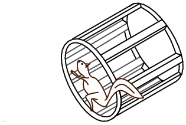
Conductores del motor de inducción de jaula de ardilla retirados del rotor.
Introducción
Después de la introducción del sistema de distribución eléctrica de CC por parte de Edison en los Estados Unidos, comenzó una transición gradual hacia el sistema de CA, más económico. La iluminación funcionó tan bien con CA como con CC. La transmisión de energía eléctrica cubría distancias más largas con menores pérdidas con corriente alterna. Sin embargo, los motores eran un problema con la corriente alterna. Inicialmente, los motores de CA se construían como motores de CC. Se encontraron numerosos problemas debido a los cambios en los campos magnéticos, en comparación con los campos estáticos en las bobinas de campo de los motores de CC.
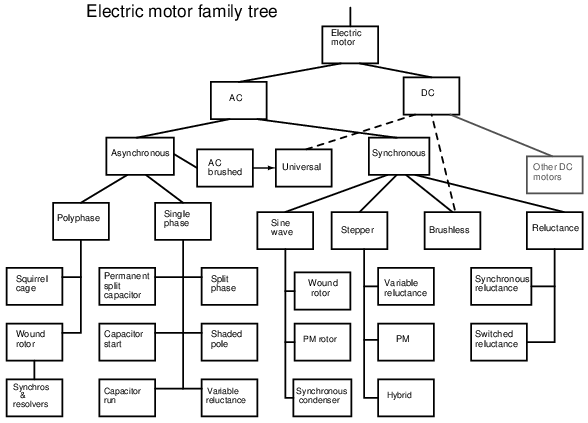
Diagrama de familia de motores eléctricos de CA.
Charles P. Steinmetz contribuyó a resolver estos problemas con su investigación de las pérdidas por histéresis en armaduras de hierro. Nikola Tesla imaginó un tipo de motor completamente nuevo cuando visualizó una turbina giratoria, no impulsada por agua o vapor, sino por un campo magnético giratorio. Su nuevo tipo de motor, el motor de inducción de CA, es el caballo de batalla de la industria hasta el día de hoy. Su robustez y sencillez (Figuraanterior) garantizan una larga vida útil, alta confiabilidad y bajo mantenimiento. Sin embargo, los pequeños motores de CA con escobillas, similares a la variedad de CC, persisten en pequeños electrodomésticos junto con los pequeños motores de inducción de Tesla. Por encima de un caballo de fuerza (750 W), el motor Tesla reina.
{kind=link}
Unidad de circuitos electrónicos modernos de estado sólido.motores de corriente continua sin escobillascon formas de onda de CA generadas a partir de una fuente de CC. El motor de CC sin escobillas, en realidad un motor de CA, está reemplazando al motor de CC con escobillas convencional en muchas aplicaciones. y, elmotor paso a paso, una versión digital del motor, es impulsado por ondas cuadradas de corriente alterna, generadas nuevamente por un circuito de estado sólido.anteriormuestra el árbol genealógico de los motores de CA descritos en este capítulo.
{kind=link}
Los cruceros y otras embarcaciones grandes reemplazan los ejes de transmisión con engranajes reductores por grandes generadores y motores de varios megavatios. Este es el caso desde hace muchos años con las locomotoras diésel-eléctricas a menor escala.
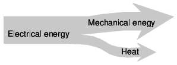
Diagrama de niveles del sistema motor.
A nivel del sistema, (Figuraanterior) un motor absorbe energía eléctrica en términos de diferencia de potencial y flujo de corriente, convirtiéndola en trabajo mecánico. Desgraciadamente, los motores eléctricos no son 100% eficientes. Parte de la energía eléctrica se pierde en calor, otra forma de energía, debido a I2Pérdidas de R en los devanados del motor. El calor es un subproducto no deseado de la conversión. Debe retirarse del motor y puede afectar negativamente a la longevidad. Por tanto, un objetivo es maximizar la eficiencia del motor, reduciendo la pérdida de calor. Los motores de CA también tienen algunas pérdidas que no encuentran los motores de CC: histéresis y corrientes parásitas.
{kind=link}
Histéresis y corrientes de Foucault
Los primeros diseñadores de motores de CA encontraron problemas debidos a pérdidas exclusivas del magnetismo de corriente alterna. Estos problemas se encontraron al adaptar Motores DC a funcionamiento AC. Aunque hoy en día pocos motores de CA se parecen a los motores de CC, estos problemas tuvieron que resolverse antes de que los motores de CA de cualquier tipo pudieran diseñarse adecuadamente antes de su construcción.
Tanto el núcleo del rotor como el del estator de los motores de CA están compuestos por una pila de laminaciones aisladas. Las laminaciones se recubren con barniz aislante antes de apilarlas y atornillarlas hasta darle la forma final.corrientes parásitasse minimizan rompiendo el bucle conductor potencial en segmentos más pequeños y con menos pérdidas. (Cifraa continuación) Los bucles de corriente parecen espiras secundarias de un transformador en cortocircuito. Las finas laminaciones aisladas rompen estos bucles. Además, el silicio (un semiconductor) agregado a la aleación utilizada en las laminaciones aumenta la resistencia eléctrica, lo que disminuye la magnitud de las corrientes parásitas.
{kind=link}
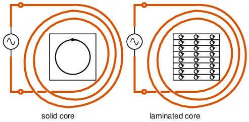
Corrientes de Foucault en núcleos de hierro.
Si las laminaciones están hechas de acero de aleación de silicio orientado al grano,histéresisSe minimizan las pérdidas. La histéresis magnética es un retraso de la intensidad del campo magnético en comparación con la fuerza de magnetización. Si un clavo de hierro dulce es magnetizado temporalmente por un solenoide, se esperaría que el clavo perdiera el campo magnético una vez que se desenergiza el solenoide. Sin embargo, una pequeña cantidad demagnetización residual, Brdebido a la histéresis. (Cifraa continuación) Una corriente alterna tiene que gastar energía, -Hc the fuerza coercitiva, para superar esta magnetización residual antes de que pueda magnetizar el núcleo de nuevo a cero, y mucho menos en la dirección opuesta. La pérdida de histéresis se produce cada vez que se invierte la polaridad del CA. La pérdida es proporcional al área encerrada por el bucle de histéresis en la curva B-H. Las aleaciones de hierro "blando" tienen menores pérdidas que las aleaciones de acero "duros" con alto contenido de carbono. El acero orientado con grano de silicio, 4% de silicio, laminado para orientar preferentemente el grano o la estructura cristalina, tiene pérdidas aún menores.
{kind=link}
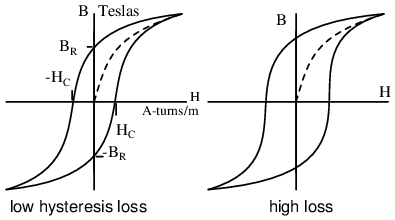
Curvas de histéresis para aleaciones de bajas y altas pérdidas.
Una vez que las leyes de histéresis de Steinmetz pudieron predecir las pérdidas del núcleo de hierro, fue posible diseñar motores de CA que funcionaran según lo diseñado. Esto era similar a poder diseñar un puente con anticipación que no colapsaría una vez construido. Este conocimiento de las corrientes parásitas y la histéresis se aplicó por primera vez a la construcción de motores conmutadores de CA similares a sus homólogos de CC. Hoy en día esto no es más que una categoría menor de motores de CA. Otros inventaron nuevos tipos de motores de CA que se parecían poco a sus parientes de CC.
Motores síncronos
Los motores síncronos monofásicos están disponibles en tamaños pequeños para aplicaciones que requieren sincronización precisa, como cronometraje (relojes) y reproductores de cintas. Aunque los relojes regulados por cuarzo que funcionan con baterías están ampliamente disponibles, la variedad que funciona con línea de CA tiene una mayor precisión a largo plazo, durante un período de meses. Esto se debe a que los operadores de las centrales eléctricas mantienen deliberadamente la precisión a largo plazo de la frecuencia del sistema de distribución de CA. Si se retrasa unos pocos ciclos, compensarán los ciclos perdidos de CA para que los relojes no pierdan tiempo.
Por encima de los 10 caballos de fuerza (10 kW), la mayor eficiencia y el factor de potencia líder hacen que los motores síncronos grandes sean útiles en la industria. Los motores síncronos grandes son un porcentaje un poco más eficientes que los motores de inducción más comunes. Sin embargo, el motor síncrono es más complejo.
Dado que los motores y generadores son similares en construcción, debería ser posible utilizar un generador como motor; por el contrario, utilizar un motor como generador. Un motor síncrono es similar a un alternador con campo giratorio. La siguiente figura muestra pequeños alternadores con un campo giratorio de imán permanente. esta figuraa continuaciónpodrían ser dos alternadores sincronizados y en paralelo impulsados por una fuente de energía mecánica, o un alternador que impulsa un motor síncrono. O podrían ser dos motores, si se conectara una fuente de alimentación externa. El punto es que en cualquier caso los rotores deben funcionar a la misma frecuencia nominal y estar en fase entre sí. Es decir, deben sersincronizado. El procedimiento para sincronizar dos alternadores es (1) abrir el interruptor, (2) accionar ambos alternadores a la misma velocidad de rotación, (3) avanzar o retrasar la fase de una unidad hasta que ambas salidas de CA estén en fase, (4) cerrar el interruptor antes de que se desfasen. Una vez sincronizados, los alternadores se bloquearán entre sí, lo que requerirá un par considerable para separar una unidad (dessincronizarla) de la otra.
{kind=link}
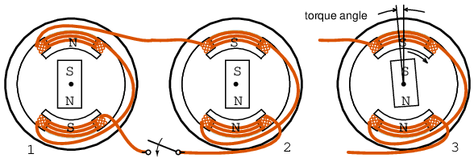
Motor síncrono funcionando al paso del alternador.
Si se aplica más torque en la dirección de rotación al rotor de uno de los alternadores giratorios anteriores, el ángulo del rotor avanzará (opuesto a (3)) con respecto al campo magnético en las bobinas del estator mientras aún está sincronizado y el rotor entregará energía a la línea de CA como un alternador. El rotor también avanzará con respecto al rotor del otro alternador. Si se aplica una carga, como un freno, a una de las unidades anteriores, el ángulo del rotor se retrasará con respecto al campo del estator como en (3), extrayendo energía de la línea de CA, como un motor. Si se aplica un par o arrastre excesivo, el rotor excederá el máximoángulo de torsiónavanza o se retrasa tanto que se pierde la sincronización. El par se desarrolla sólo cuando se mantiene la sincronización del motor.
En el caso de un pequeño motor síncrono en lugar del alternador FiguraanteriorBien, no es necesario pasar por el elaborado procedimiento de sincronización para alternadores. Sin embargo, el motor síncrono no arranca automáticamente y aun así se debe llevar a la velocidad eléctrica aproximada del alternador antes de que se bloquee (sincronice) con la velocidad de rotación del generador. Una vez que alcance la velocidad, el motor síncrono mantendrá el sincronismo con la fuente de alimentación de CA y desarrollará par.
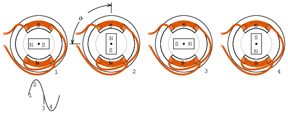
La onda sinusoidal impulsa el motor síncrono.
Suponiendo que el motor alcanza la velocidad síncrona, ya que la onda sinusoidal cambia a positiva en la Figuraanterior(1), la bobina norte inferior empuja el polo norte del rotor, mientras que la bobina sur superior atrae ese polo norte del rotor. De manera similar, el polo sur del rotor es repelido por la bobina superior sur y atraído por la bobina inferior norte. En el momento en que la onda sinusoidal alcanza un pico en (2), el par que mantiene levantado el polo norte del rotor es máximo. Este par disminuye a medida que la onda sinusoidal disminuye a 0 V.DCen (3) con el par al mínimo.
{kind=link}
A medida que la onda sinusoidal cambia a negativa entre (3 y 4), la bobina sur inferior empuja el polo sur del rotor, mientras atrae el polo norte del rotor. De manera similar, el polo norte del rotor es repelido por la bobina norte superior y atraído por la bobina sur inferior. En (4), la onda sinusoidal alcanza un pico negativo y el par de retención vuelve a ser máximo. A medida que la onda sinusoidal cambia de negativa a 0 VDCa positivo, el proceso se repite para un nuevo ciclo de onda sinusoidal.
Tenga en cuenta que la figura anterior ilustra la posición del rotor para una condición sin carga (α=0o). En la práctica real, cargar el rotor hará que el rotor se retrase de las posiciones mostradas por el ángulo α. Este ángulo aumenta con la carga hasta que se alcanza el par máximo del motor en α=90oeléctrico. La sincronización y el par se pierden más allá de este ángulo.
La corriente en las bobinas de un motor síncrono monofásico pulsa mientras alterna la polaridad. Si la velocidad del rotor del imán permanente está cerca de la frecuencia de esta alternancia, se sincroniza con esta alternancia. Dado que el campo de la bobina pulsa y no gira, es necesario acelerar el rotor de imán permanente con un motor auxiliar. Este es un pequeño motor de inducción similar a los de la siguiente sección.
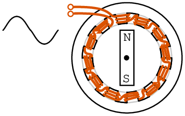
La adición de postes de campo disminuye la velocidad.
Un alternador de 2 polos (par de polos N-S) generará una onda sinusoidal de 60 Hz cuando se gira a 3600 rpm (revoluciones por minuto). Las 3600 rpm corresponden a 60 revoluciones por segundo. Un motor síncrono de imán permanente de 2 polos similar también girará a 3600 rpm. Se puede construir un motor de menor velocidad agregando más pares de polos. Un motor de 4 polos giraría a 1800 rpm, un motor de 12 polos a 600 rpm. El estilo de construcción mostrado (Figura above)) es para ilustración. Los motores síncronos de estator multipolar de mayor eficiencia y mayor par en realidad tienen múltiples polos en el rotor.
{kind=link}
Motor síncrono de 12 polos de un devanado.
En lugar de enrollar 12 bobinas para un motor de 12 polos, enrolle una sola bobina con doce piezas de polos de acero interdigitados como se muestra en la Figuraanterior. Aunque la polaridad de la bobina alterna debido a la CA aplicada, suponga que la parte superior está temporalmente al norte y la inferior al sur. Las piezas polares dirigen el flujo sur desde la parte inferior y exterior de la bobina hasta la parte superior. Estos 6 sur están intercalados con pestañas de 6 norte dobladas desde la parte superior de la pieza polar de acero de la bobina. Por lo tanto, una barra de rotor de imán permanente encontrará pares de 6 polos correspondientes a 6 ciclos de CA en una rotación física de la barra de imán. La velocidad de rotación será 1/6 de la velocidad eléctrica del AC. La velocidad del rotor será 1/6 de la experimentada con un motor síncrono de 2 polos. Ejemplo: 60 Hz harían girar un motor de 2 polos a 3600 rpm, o 600 rpm para un motor de 12 polos.
{kind=link}
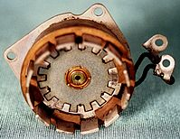
Reimpreso con autorización de Westclox History enwww.clockHistory.com
El estator (Figuraanterior) muestra un motor de reloj síncrono Westclox de 12 polos. La construcción es similar a la figura anterior con una sola bobina. El estilo de construcción de una bobina es económico para motores de bajo torque. Este motor de 600 rpm acciona engranajes reductores que mueven las manecillas del reloj.
{kind=link}
Si el motor Westclox funcionara a 600 rpm con una fuente de alimentación de 50 Hz, ¿cuántos polos se necesitarían? Un motor de 10 polos tendría 5 pares de polos N-S. Giraría a 50/5 = 10 rotaciones por segundo o 600 rpm (10 s-1x 60 s/minuto.)
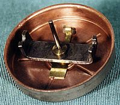
Reimpreso con permiso de Westclox History enwww.clockHistory.com
El rotor (Figuraanterior) consta de una barra de imán permanente y una copa de acero del motor de inducción. La barra del motor síncrono que gira dentro de las pestañas de los polos mantiene la hora exacta. La copa del motor de inducción fuera de la barra magnética encaja afuera y sobre las pestañas para el arranque automático. Hubo un tiempo en que se fabricaban motores que no arrancaban automáticamente sin copa del motor de inducción.
{kind=link}
Un motor síncrono trifásico como se muestra en la Figuraa continuacióngenera un campo eléctricamente giratorio en el estator. Estos motores no arrancan automáticamente si se arrancan desde una fuente de alimentación de frecuencia fija, como 50 o 60 Hz, como las que se encuentran en un entorno industrial. Además, el rotor no es un imán permanente como se muestra a continuación para los motores de varios caballos de fuerza (varios kilovatios) utilizados en la industria, sino un electroimán. Los grandes motores síncronos industriales son más eficientes que los motores de inducción. Se utilizan cuando se requiere velocidad constante. Al tener un factor de potencia adelantado, pueden corregir la línea de CA por un factor de potencia retrasado.
{kind=link}
Las tres fases de excitación del estator se suman vectorialmente para producir un único campo magnético resultante que gira f/2n veces por segundo, donde f es la frecuencia de la línea eléctrica, 50 o 60 Hz para motores industriales operados por línea eléctrica. El número de polos es n. Para la velocidad del rotor en rpm, multiplique por 60.
S = f120/n where: S = rotor speed in rpm f = AC line frequency n = number of poles per phase
El motor síncrono trifásico de 4 polos (por fase) (Figuraa continuación) girará a 1800 rpm con 60 Hz de potencia o 1500 rpm con 50 Hz de potencia. Si las bobinas se energizan una a la vez en la secuencia φ-1, φ-2, φ-3, el rotor debe apuntar a los polos correspondientes por turno. Dado que las ondas sinusoidales en realidad se superponen, el campo resultante rotará, no en pasos, sino suavemente. Por ejemplo, cuando las ondas sinusoidales φ-1 y φ-2 coinciden, el campo estará en un pico apuntando entre estos polos. El rotor magnético de barra que se muestra solo es apropiado para motores pequeños. El rotor con múltiples polos magnéticos (abajo a la derecha) se utiliza en cualquier motor eficiente que impulse una carga sustancial. Serán electroimanes alimentados por anillos colectores en grandes motores industriales. Los grandes motores síncronos industriales se arrancan automáticamente mediante conductores de jaula de ardilla integrados en la armadura, que actúan como un motor de inducción. La armadura electromagnética solo se energiza después de que el rotor alcanza una velocidad casi sincrónica.
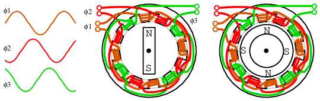
Motor síncrono trifásico de 4 polos.
Pequeños motores síncronos multifásicos (Figuraanterior) se puede iniciar aumentando la frecuencia del variador desde cero hasta la frecuencia de funcionamiento final. Las señales de accionamiento multifásicas son generadas por circuitos electrónicos y serán ondas cuadradas en todas las aplicaciones excepto en las más exigentes. Estos motores se conocen como motores de CC sin escobillas. Los verdaderos motores síncronos son impulsados por formas de onda sinusoidales. Se puede utilizar accionamiento bifásico o trifásico suministrando el número adecuado de devanados en el estator. Arriba solo se muestra trifásico.
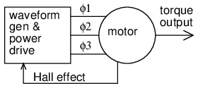
Motor síncrono electrónico
El diagrama de bloques (Figuraanterior) muestra la electrónica de accionamiento asociada a una tensión baja (12 VDC) motor síncrono. Estos motores tienen unsensor de posiciónIntegrado dentro del motor, que proporciona una señal de bajo nivel con una frecuencia proporcional a la velocidad de rotación del motor. El sensor de posición podría ser tan simple como sensores de campo magnético de estado sólido comoefecto hallDispositivos que proporcionan sincronización de conmutación (dirección de corriente de armadura) a la electrónica del variador. El sensor de posición podría ser un sensor angular de alta resolución tal como unresolver, an inductosyn(codificador magnético) o un codificador óptico.
{kind=link}
Si se requiere una velocidad de rotación constante y precisa (como para una unidad de disco)tacómetro y bucle de bloqueo de fasepuede estar incluido. (Cifraa continuación) Esta señal del tacómetro, un tren de impulsos proporcional a la velocidad del motor, se retroalimenta a un circuito bloqueado de fase, que compara la frecuencia y la fase del tacómetro con una fuente de frecuencia de referencia estable, como un oscilador de cristal.
{kind=link}
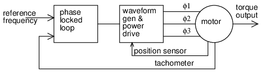
El bucle de fase bloqueada controla la velocidad del motor síncrono.
Un motor impulsado por ondas cuadradas de corriente, proporcionadas por simples sensores de efecto Hall, se conoce comomotor de corriente continua sin escobillas. Este tipo de motor tiene mayorpar de ondulaciónvariación del par a través de la revolución del eje que un motor impulsado por onda sinusoidal. Esto no es un problema para muchas aplicaciones. Sin embargo, en esta sección nos interesan principalmente los motores síncronos.
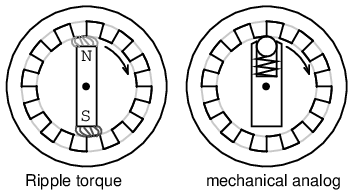
Par de ondulación del motor y analógico mecánico.
El par ondulado o dentado es causado por la atracción magnética de los polos del rotor a las piezas polares del estator. (Cifraanterior) Tenga en cuenta que no hay bobinas de estator, ni siquiera un motor. El rotor PM se puede girar con la mano, pero encontrará atracción hacia las piezas polares cuando esté cerca de ellas. Esto es análogo a la situación mecánica. ¿El par de ondulación sería un problema para un motor utilizado en un reproductor de cintas? Sí, no queremos que el motor acelere y desacelere alternativamente mientras mueve la cinta de audio por un cabezal de reproducción de cinta. ¿El par ondulado sería un problema para el motor de un ventilador? No.
{kind=link}
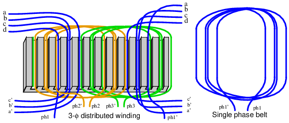
Los devanados distribuidos en una correa producen un campo más sinusoidal.
Si un motor es impulsado por ondas sinusoidales de corriente síncronas con la fuerza contraelectromotriz del motor, se clasifica como un motor de CA síncrono, independientemente de si las formas de onda del variador se generan por medios electrónicos. Un motor síncrono generará una contrafem sinusoidal si el campo magnético del estator tiene una distribución sinusoidal. Será más sinusoidal si los devanados de los polos se distribuyen en una correa (Figuraanterior) a través de muchas ranuras en lugar de concentrarse en un poste grande (como se muestra en la mayoría de nuestras ilustraciones simplificadas). Esta disposición cancela muchos de los armónicos impares del campo del estator. Las ranuras que tienen menos devanados en el borde del devanado de fase pueden compartir el espacio con otras fases.Las correas de enrollado pueden adoptar una forma concéntrica alternativa como se muestra en la Figuraa continuación.
{kind=link}
{kind=link}
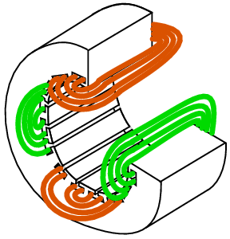
Cinturones concéntricos.
Para un motor bifásico, impulsado por una onda sinusoidal, el par es constante a lo largo de una revolución según la identidad trigonométrica:
sin2θ + cos2θ = 1
La generación y sincronización de la forma de onda del variador requiere una indicación de la posición del rotor más precisa que la proporcionada por los sensores de efecto Hall utilizados en los motores CC sin escobillas. Asolucionador, ocodificador óptico o magnéticoProporciona una resolución de cientos a miles de partes (pulsos) por revolución. Un resolver proporciona señales analógicas de posición angular en forma de señales proporcionales al seno y coseno del ángulo del eje. Los codificadores proporcionan una indicación de posición angular digital en formato serie o paralelo. La unidad de onda sinusoidal puede ser en realidad de un PWM,Modulador de ancho de pulso, un método de alta eficiencia para aproximar una onda sinusoidal con una forma de onda digital. (Cifraa continuación) Cada fase requiere una electrónica de accionamiento para esta forma de onda desfasada en la cantidad adecuada por fase.
{kind=link}
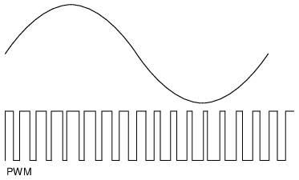
PWM se aproxima a una onda sinusoidal.
La eficiencia de los motores síncronos es mayor que la de los motores de inducción. El motor síncrono también puede ser más pequeño, especialmente si en el rotor se utilizan imanes permanentes de alta energía. La llegada de la electrónica moderna de estado sólido hace posible accionar estos motores a velocidad variable. Los motores de inducción se utilizan principalmente en tracción ferroviaria. Sin embargo, un pequeño motor síncrono, que se monta dentro de una rueda motriz, lo hace atractivo para tales aplicaciones. Elsuperconductor de alta temperaturaLa versión de este motor pesa entre un quinto y un tercio del peso de un motor bobinado de cobre.[1]El motor síncrono superconductor experimental más grande es capaz de impulsar un barco de clase destructor naval. En todas estas aplicaciones el variador electrónico de velocidad es fundamental.
El variador de velocidad también debe reducir el voltaje del variador a baja velocidad debido a la disminución de la reactancia inductiva a menor frecuencia. Para desarrollar el par máximo, el rotor necesita retrasarse 90° con respecto a la dirección del campo del estator.o. Más, pierde la sincronización. Mucho menos da como resultado un par reducido. Por tanto, es necesario conocer con precisión la posición del rotor. Y es necesario calcular y controlar la posición del rotor con respecto al campo del estator. Este tipo de control se conoce comocontrol de fase vectorial. Se implementa con un microprocesador rápido que acciona un modulador de ancho de pulso para las fases del estator.
El estator de un motor síncrono es el mismo que el del motor de inducción más popular. Como resultado, el control electrónico de velocidad de grado industrial utilizado con motores de inducción también es aplicable a grandes motores síncronos industriales.
Si se desenrollan el rotor y el estator de un motor síncrono rotativo convencional, se obtiene un motor lineal síncrono. Este tipo de motor se aplica al posicionamiento lineal preciso de alta velocidad.[2]
Se está desarrollando una versión más grande del motor síncrono lineal con un carro móvil que contiene imanes permanentes de NdBFe de alta energía para lanzar aviones desde portaaviones navales.[3]
Condensador síncrono
Los motores síncronos cargan la línea eléctrica con un factor de potencia adelantado. Esto suele ser útil para cancelar el factor de potencia en retraso más común causado por motores de inducción y otras cargas inductivas. Originalmente, los grandes motores síncronos industriales se empezaron a utilizar ampliamente debido a su capacidad para corregir el factor de potencia retrasado de los motores de inducción.
Este factor de potencia principal se puede exagerar eliminando la carga mecánica ydemasiado emocionanteel campo del motor síncrono. Un dispositivo de este tipo se conoce comocondensador sincrónico. Además, el factor de potencia principal se puede ajustar variando la excitación del campo. Esto hace posible casi cancelar un factor de potencia en retraso arbitrario a la unidad al poner en paralelo la carga en retraso con un motor síncrono. Un condensador síncrono funciona en una condición límite entre un motor y un generador sin carga mecánica para cumplir esta función. Puede compensar un factor de potencia en adelanto o en atraso, absorbiendo o suministrando potencia reactiva a la línea. Esto mejora la regulación del voltaje de la línea eléctrica.
Dado que un condensador síncrono no proporciona par, se puede prescindir del eje de salida y encerrar fácilmente la unidad en una carcasa hermética al gas. Luego, el condensador síncrono se puede llenar con hidrógeno para ayudar a la refrigeración y reducir las pérdidas por viento. Dado que la densidad del hidrógeno es el 7% de la del aire, la pérdida por viento para una unidad llena de hidrógeno es el 7% de la que se encuentra en el aire. Además, la conductividad térmica del hidrógeno es diez veces mayor que la del aire. Por tanto, la eliminación del calor es diez veces más eficaz. Como resultado, un condensador síncrono lleno de hidrógeno puede funcionar con más fuerza que una unidad enfriada por aire, o puede ser físicamente más pequeño para una capacidad determinada. No hay riesgo de explosión siempre que la concentración de hidrógeno se mantenga por encima del 70 %, normalmente por encima del 91 %.
La eficiencia de las líneas de transmisión de energía largas se puede aumentar colocando condensadores síncronos a lo largo de la línea para compensar las corrientes retrasadas causadas por la inductancia de la línea. Se puede transmitir más potencia real a través de una línea de tamaño fijo si el factor de potencia se acerca a la unidad mediante condensadores síncronos que absorben potencia reactiva.
La capacidad de los condensadores síncronos para absorber o producir energía reactiva de forma transitoria estabiliza la red eléctrica contra cortocircuitos y otras condiciones de falla transitoria. Se estabilizan las caídas y caídas transitorias de milisegundos de duración. Esto complementa tiempos de respuesta más largos de regulación de voltaje de acción rápida y excitación de equipos generadores. El condensador síncrono ayuda a la regulación de voltaje al extraer corriente principal cuando el voltaje de línea cae, lo que aumenta la excitación del generador y restablece así el voltaje de línea. (Cifraa continuación) Una batería de condensadores no tiene esta capacidad.
{kind=link}
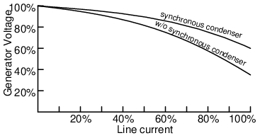
El condensador síncrono mejora la regulación del voltaje de la línea eléctrica.
La capacidad de un condensador síncrono se puede aumentar reemplazando el rotor de campo de hierro bobinado con cobre por un rotor sin hierro dealambre superconductor de alta temperatura, que debe enfriarse hasta el punto de ebullición del nitrógeno líquido de 77ok (-196oDO). El cable superconductor transporta 160 veces la corriente de un cable de cobre comparable, al tiempo que produce una densidad de flujo de 3 Teslas o superior. Un núcleo de hierro se saturaría a 2 Teslas en el entrehierro del rotor. Así, un núcleo de hierro, aproximado µr=1000, no es más útil que el aire o cualquier otro material con una permeabilidad relativa µr=1, en el rotor. Se dice que una máquina de este tipo tiene una considerable capacidad transitoria adicional para suministrar energía reactiva a cargas problemáticas como los hornos de arco para fundir metales. El fabricante lo describe como un “amortiguador de potencia reactiva”. Un condensador síncrono de este tipo tiene una mayor densidad de potencia (físicamente más pequeña) que un banco de condensadores conmutados. La capacidad de absorber o producir energía reactiva de forma transitoria estabiliza la red eléctrica general contra condiciones de falla.
Reluctance motor
The motor de reluctancia variablese basa en el principio de que una pieza de hierro libre se moverá para completar una trayectoria de flujo magnético con un mínimoreluctancia, el análogo magnético de la resistencia eléctrica. (Cifraa continuación)
{kind=link}
Synchronous reluctance
Si se desenergiza el campo giratorio de un motor síncrono grande con polos salientes, seguirá desarrollando entre el 10 y el 15% del par síncrono. Esto se debe a la reluctancia variable a lo largo de la revolución del rotor. No existe una aplicación práctica para un motor de reluctancia síncrono de gran tamaño. Sin embargo, resulta práctico en tamaños pequeños.
Si se cortan ranuras en el rotor sin conductores de un motor de inducción, correspondientes a las ranuras del estator, se obtiene unmotor síncrono de reluctanciaresultados. Arranca como un motor de inducción pero funciona con una pequeña cantidad de par síncrono. El par sincrónico se debe a cambios en la reluctancia de la trayectoria magnética desde el estator a través del rotor a medida que se alinean las ranuras. Este motor es un medio económico para desarrollar un par síncrono moderado. El bajo factor de potencia, el bajo par de arranque y la baja eficiencia son características del motor de reluctancia variable accionado por línea de alimentación directa. Tal era el estado del motor de reluctancia variable durante un siglo antes del desarrollo del control de potencia de semiconductores.
Switched reluctance
Si se monta un rotor de hierro con polos, pero sin conductores, en un estator multifásico,motor de reluctancia conmutada, capaz de sincronizarse con los resultados del campo del estator. Cuando se energiza un par de polos de la bobina del estator, el rotor se moverá a la trayectoria de menor reluctancia magnética. (Cifraa continuación) Un motor de reluctancia conmutada también se conoce como motor de reluctancia variable. La reticencia del rotor a la trayectoria del flujo del estator varía con la posición del rotor.
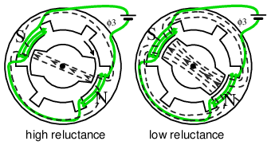
La reluctancia es una función de la posición del rotor en un motor de reluctancia variable.
Conmutación secuencial (Figuraa continuación) de las fases del estator mueve el rotor de una posición a la siguiente. El flujo mangético busca el camino de menor desgana, el análogo magnético de la resistencia eléctrica. Este es un rotor y formas de onda muy simplificados para ilustrar el funcionamiento.
{kind=link}
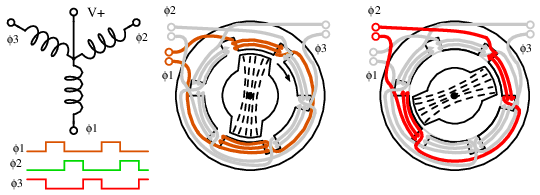
Motor de reluctancia variable, funcionamiento demasiado simplificado.
Si un extremo de cada devanado trifásico del motor de reluctancia conmutada se saca a través de un cable común, podemos explicar el funcionamiento como si fuera un motor paso a paso. (Cifraanterior) Las otras conexiones de la bobina se ponen a tierra sucesivamente, una a la vez, en ununidad de ondapatrón. Esto atrae al rotor hacia el campo magnético que gira en el sentido de las agujas del reloj en 60oincrementos.
Varias formas de onda pueden impulsar motores de reluctancia variable. (Cifraa continuación) El accionamiento por onda (a) es simple y requiere solo un interruptor unipolar de un solo extremo. Es decir, uno que sólo cambia en una dirección. El accionamiento bipolar (b) proporciona más torsión, pero requiere un interruptor bipolar. El motor debe tirar alternativamente hacia arriba y hacia abajo. Las formas de onda (a y b) son aplicables a la versión de motor paso a paso del motor de reluctancia variable. Para un funcionamiento suave y sin vibraciones, es deseable y fácil de generar la aproximación de 6 pasos de una onda sinusoidal (c). El impulsor de onda sinusoidal (d) puede generarse mediante un modulador de ancho de pulso (PWM) o extraerse de la línea eléctrica.
{kind=link}
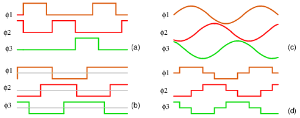
Formas de onda de accionamiento de motor de reluctancia variable: (a) accionamiento de onda unipolar, (b) paso completo bipolar (c) onda sinusoidal (d) bipolar de 6 pasos.
Duplicar el número de polos del estator disminuye la velocidad de rotación y aumenta el par. Esto podría eliminar una transmisión de reducción de engranajes. Un motor de reluctancia variable destinado a moverse en pasos discretos, pararse y arrancar es unmotor paso a paso de reluctancia variable, tratado en otra sección. Si el objetivo es una rotación suave, existe una versión accionada electrónicamente del motor de reluctancia conmutada. Los motores de reluctancia variable o los motores paso a paso en realidad utilizan rotores como los de la Figuraa continuación.
{kind=link}
Motor de reluctancia variable controlado electrónicamente
Los motores de reluctancia variable tienen un rendimiento deficiente cuando se accionan directamente por línea eléctrica. Sin embargo, los microprocesadores y la unidad de potencia de estado sólido hacen de este motor una solución económica de alto rendimiento en algunas aplicaciones de gran volumen.
Aunque es difícil de controlar, este motor es fácil de hacer girar. La conmutación secuencial de las bobinas de campo crea un campo magnético giratorio que arrastra consigo el rotor de forma irregular mientras busca la trayectoria de menor reluctancia magnética. La relación entre el par y la corriente del estator es altamente no lineal y difícil de controlar.
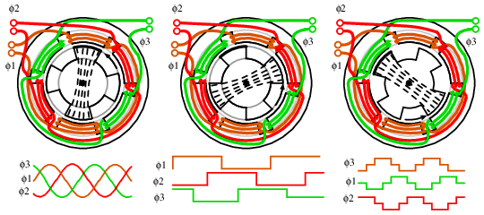
Motor de reluctancia variable accionado electrónicamente.
Un motor de reluctancia variable accionado electrónicamente (Figuraa continuación) se parece a un motor CC sin escobillas sin rotor de imán permanente. Esto hace que el motor sea sencillo y económico. Sin embargo, esto se compensa con el coste del control electrónico, que no es tan sencillo como el de un motor CC sin escobillas.
{kind=link}
Si bien el motor de reluctancia variable es simple, incluso más que un motor de inducción, es difícil de controlar. El control electrónico resuelve este problema y hace que sea práctico accionar el motor muy por encima y por debajo de la frecuencia de la línea eléctrica. Un motor de reluctancia variable impulsado por unservo, un sistema de retroalimentación electrónica, controla el par y la velocidad, minimizando el par ondulado. Cifraa continuación
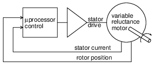
Motor de reluctancia variable accionado electrónicamente.
Esto es lo opuesto al alto par de ondulación deseado en los motores paso a paso. En lugar de un paso a paso, un motor de reluctancia variable está optimizado para una rotación continua a alta velocidad con un par de ondulación mínimo. Es necesario medir la posición del rotor con un sensor de posición giratorio, como un codificador óptico o magnético, o derivarla de la supervisión de la fuerza electromagnética inversa del estator. Un microprocesador realiza cálculos complejos para cambiar los devanados en el momento adecuado con dispositivos de estado sólido. Esto debe hacerse precisamente para minimizar el ruido audible y el par de ondulación. Para lograr el par de ondulación más bajo, se debe monitorear y controlar la corriente del devanado. Los estrictos requisitos de accionamiento hacen que este motor solo sea práctico para aplicaciones de gran volumen, como motores de aspiradoras, motores de ventiladores o motores de bombas energéticamente eficientes. Una de estas aspiradoras utiliza un motor de ventilador compacto de 100.000 rpm accionado electrónicamente y de alta eficiencia. La simplicidad del motor compensa el coste de la electrónica del accionamiento. Sin escobillas, sin conmutador, sin devanados del rotor, sin imanes permanentes, simplifica la fabricación del motor. La eficiencia de este motor accionado electrónicamente puede ser alta. Pero requiere una optimización considerable, utilizando técnicas de diseño especializadas, lo que sólo se justifica para grandes volúmenes de fabricación.
Ventajas
- Construcción simple: sin escobillas, conmutador ni imanes permanentes, ni Cu ni Al en el rotor.
- Alta eficiencia y confiabilidad en comparación con los motores convencionales de CA o CC.
- Alto par de arranque.
- Rentable en comparación con el motor CC sin casquillos en grandes volúmenes.
- Adaptable a temperaturas ambiente muy altas.
- Es posible un control de velocidad preciso y de bajo costo si el volumen es lo suficientemente alto.
- La corriente versus el par es altamente no lineal
- La conmutación de fase debe ser precisa para minimizar el par de ondulación
- La corriente de fase debe controlarse para minimizar el par de ondulación.
- Ruido acústico y eléctrico.
- No aplicable a volúmenes bajos debido a problemas de control complejos
Motores paso a paso
A motor paso a pasoEs una versión “digital” del motor eléctrico. El rotor se mueve en pasos discretos según se le ordena, en lugar de girar continuamente como un motor convencional. Cuando está parado pero energizado, unpaso a paso(abreviatura de motor paso a paso) mantiene su carga estable con unpar de retención. La amplia aceptación del motor paso a paso en las últimas dos décadas fue impulsada por el predominio de la electrónica digital. La electrónica moderna del controlador de estado sólido fue la clave de su éxito. Además, los microprocesadores interactúan fácilmente con los circuitos controladores de motores paso a paso.
En cuanto a la aplicación, el predecesor del motor paso a paso fue el servomotor. Hoy en día, esta es una solución de mayor costo para aplicaciones de control de movimiento de alto rendimiento. El coste y la complejidad de un servomotor se debe a los componentes adicionales del sistema: sensor de posición y amplificador de error. (Cifraa continuación) Sigue siendo la forma de colocar cargas pesadas fuera del alcance de los motores paso a paso de menor potencia. Una alta aceleración o una precisión inusualmente alta aún requieren un servomotor. De lo contrario, el valor predeterminado es el paso a paso debido al bajo costo, la electrónica de accionamiento simple, la buena precisión, el buen torque, la velocidad moderada y el bajo costo.
{kind=link}
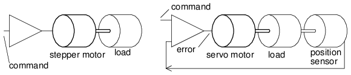
Motor paso a paso versus servomotor.
Un motor paso a paso posiciona los cabezales de lectura y escritura en una unidad de disquete. Alguna vez se usaron para el mismo propósito en los discos duros. Sin embargo, la alta velocidad y precisión requeridas para el posicionamiento del cabezal del disco duro moderno exigen el uso de un servomotor lineal (bobina móvil).
El servoamplificador es un amplificador lineal con algunos componentes discretos difíciles de integrar. Se requiere un esfuerzo de diseño considerable para optimizar la ganancia del servoamplificador frente a la respuesta de fase de los componentes mecánicos. Los controladores de motores paso a paso son interruptores de estado sólido menos complejos y pueden estar "encendidos" o "apagados". Por tanto, un controlador de motor paso a paso es menos complejo y costoso que un controlador de servomotor.
Los motores síncronos Slo-syn pueden funcionar con tensión de línea de CA como un motor de inducción de condensador permanente monofásico. El condensador genera un 90osegunda fase. Con la tensión de línea directa, tenemos un variador bifásico. Impulsar formas de onda debipolar(±) las ondas cuadradas de 2-24 V son más comunes hoy en día. Los campos magnéticos bipolares también pueden generarse a partir deunipolar(una polaridad) aplicados a extremos alternos de un devanado con derivación central. (Cifraa continuación) En otras palabras, se puede cambiar CC al motor para que vea CA. A medida que los devanados se energizan en secuencia, el rotor se sincroniza con el consiguiente campo magnético del estator. Por lo tanto, tratamos los motores paso a paso como una clase de motor síncrono de CA.
{kind=link}
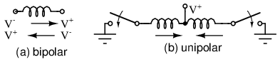
El accionamiento unipolar de la bobina central en (b) emula la corriente alterna en una sola bobina en (a).
Características
Los motores paso a paso son resistentes y económicos porque el rotor no contiene anillos colectores ni conmutador. El rotor es un sólido cilíndrico, que también puede tener polos salientes o dientes finos. La mayoría de las veces el rotor es un imán permanente. Determine que el rotor es un imán permanente mediante rotación manual sin motor que muestrapar de retención, pulsaciones de par. Las bobinas del motor paso a paso están enrolladas dentro de un estator laminado, excepto parapuede apilarconstrucción. Puede haber tan solo dos fases sinuosas o hasta cinco. Estas fases frecuentemente se dividen en pares. Por lo tanto, un motor paso a paso de 4 polos puede tener dos fases compuestas por pares de polos en línea espaciados 90oaparte. También puede haber varios pares de polos por fase. Por ejemplo, un paso a paso de 12 polos tiene 6 pares de polos, tres pares por fase.
Dado que los motores paso a paso no necesariamente giran continuamente, no existe una clasificación de caballos de fuerza. Si giran continuamente, ni siquiera se acercan a una capacidad nominal subfraccional de hp. Son dispositivos verdaderamente pequeños y de bajo consumo en comparación con otros motores. Tienen valores de torque de mil pulgadas-oz (pulgadas-onzas) o diez n-m (newton-metros) para una unidad de tamaño de 4 kg. Un pequeño paso a paso del tamaño de una moneda de diez centavos tiene un par de torsión de una centésima de newton-metro o unas pocas onzas-pulgada. La mayoría de los motores paso a paso tienen unas pocas pulgadas de diámetro y una fracción de n-m o unas pocas pulgadas-oz de torque. El par disponible es función de la velocidad del motor, la inercia de la carga, el par de carga y la electrónica del variador, como se ilustra en lacurva de velocidad vs par. (Cifraa continuación) Un paso a paso energizado y retenido tiene una velocidad relativamente alta.par de retenciónclasificación. Hay menos par disponible para un motor en funcionamiento, que disminuye a cero a cierta velocidad alta. Esta velocidad frecuentemente no se puede alcanzar debido a la resonancia mecánica de la combinación de carga del motor.
{kind=link}
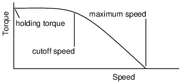
Características de velocidad paso a paso.
Los motores paso a paso se mueven paso a paso, elángulo de paso, cuando se cambian las formas de onda del variador. El ángulo de paso está relacionado con los detalles de construcción del motor: número de bobinas, número de polos, número de dientes. Puede ser desde 90oa 0,75o, correspondiente a 4 a 500 pasos por revolución. La electrónica de accionamiento puede reducir a la mitad el ángulo de paso moviendo el rotor hacia adentro.semitonos.
Los motores paso a paso no pueden alcanzar instantáneamente las velocidades en la curva de velocidad y par. Elfrecuencia máxima de inicioes la velocidad más alta a la que se puede iniciar un paso a paso detenido y descargado. Cualquier carga hará que este parámetro sea inalcanzable. En la práctica, la velocidad de paso aumenta durante el arranque desde muy por debajo de la frecuencia de arranque máxima. Al detener un motor paso a paso, la velocidad de paso puede reducirse antes de detenerse.
El par máximo al que un paso a paso puede arrancar y detenerse es elpar de tracción. Esta carga de torsión en el paso a paso se debe a cargas de fricción (freno) e inerciales (volante) en el eje del motor. Una vez que el motor alcance la velocidad,par de extracciónes el par máximo sostenible sin perder pasos.
Hay tres tipos de motores paso a paso en orden de complejidad creciente: reluctancia variable, imán permanente e híbrido. El paso a paso de reluctancia variable tiene un rotor sólido de acero blando con polos salientes. El motor paso a paso de imán permanente tiene un rotor cilíndrico de imán permanente. El paso a paso híbrido tiene dientes de acero blando agregados al rotor de imán permanente para un ángulo de paso más pequeño.
Variable reluctance stepper
A motor paso a paso de reluctancia variableSe basa en el flujo magnético que busca la ruta de menor reluctancia a través de un circuito magnético. Esto significa que un rotor magnético blando de forma irregular se moverá para completar un circuito magnético, minimizando la longitud de cualquier entrehierro de alta reluctancia. El estator suele tener tres devanados distribuidos entre pares de polos, el rotor cuatro polos salientes, lo que produce un 30oángulo de paso. (Figuraa continuación) Un paso a paso desenergizado sin par de retención cuando se gira con la mano se puede identificar como un paso a paso de reluctancia variable.
{kind=link}
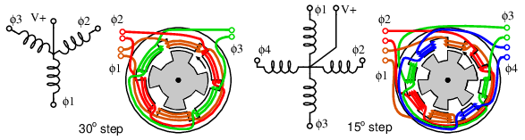
Motores paso a paso de reluctancia variable trifásicos y cuatrofásicos.
Las formas de onda del variador para el motor paso a paso de 3 φ se pueden ver en la sección "Motor de reluctancia". El accionamiento para un paso a paso de 4 φ se muestra en la Figuraa continuación. La conmutación secuencial de las fases del estator produce un campo magnético giratorio que sigue el rotor. Sin embargo, debido al menor número de polos del rotor, el rotor se mueve menos que el ángulo del estator en cada paso. Para un motor paso a paso de reluctancia variable, el ángulo de paso viene dado por:
{kind=link}
ΘS = 360o/NS ΘR = 360o/NR ΘST = ΘR - ΘS where: ΘS = stator angle, ΘR = Rotor angle, ΘST = step angle NS = number stator poles, NP = number rotor poles
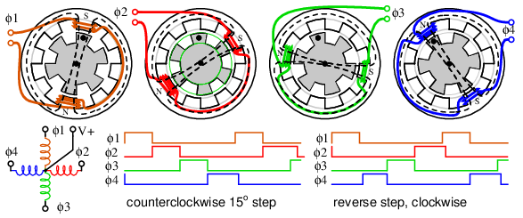
Secuencia de pasos para paso a paso de reluctancia variable.
En la figuraanterior, pasando de φ1a φ2, etc., el campo magnético del estator gira en el sentido de las agujas del reloj. El rotor se mueve en sentido antihorario (CCW). ¡Observa lo que no sucede! El diente punteado del rotor no pasa al siguiente diente del estator. En cambio, el φ2El campo del estator atrae un diente diferente al mover el rotor en sentido antihorario, que es un ángulo más pequeño (15o) que el ángulo del estator de 30o. El ángulo del diente del rotor de 45oentra en el cálculo mediante la ecuación anterior. El rotor se movió en sentido antihorario al siguiente diente del rotor en 45o, pero se alinea con un CW por 30odiente del estator. Por lo tanto, el ángulo de paso real es la diferencia entre un ángulo del estator de 45oy un ángulo del rotor de 30o. ¿Hasta dónde giraría el motor paso a paso si el rotor y el estator tuvieran el mismo número de dientes? Cero: sin rotación.
Comenzando en reposo con la fase φ1energizado, se requieren tres pulsos (φ2, φ3, φ4) para alinear el diente del rotor “punteado” con el siguiente diente del estator en sentido antihorario, que es 45o. Con 3 pulsos por diente del estator y 8 dientes del estator, 24 pulsos o pasos mueven el rotor 360o.
Al invertir la secuencia de impulsos, se invierte el sentido de rotación arriba a la derecha. La dirección, la velocidad de paso y el número de pasos se controlan mediante un controlador de motor paso a paso que alimenta un controlador o amplificador. Esto podría combinarse en una sola placa de circuito. El controlador podría ser un microprocesador o un circuito integrado especializado. El controlador no es un amplificador lineal, sino un simple interruptor de encendido y apagado capaz de generar una corriente lo suficientemente alta como para energizar el paso a paso. En principio, el controlador podría ser un relé o incluso un interruptor de palanca para cada fase. En la práctica, el controlador son interruptores de transistores discretos o un circuito integrado. Tanto el controlador como el controlador pueden combinarse en un único circuito integrado que acepte un comando de dirección y un pulso de paso. Envía corriente a las fases adecuadas en secuencia.
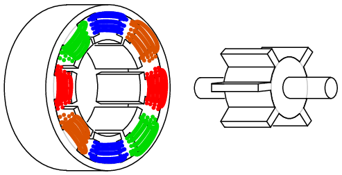
Motor paso a paso de reluctancia variable.
Desarme un paso a paso de desgana para ver los componentes internos. De lo contrario, mostramos la construcción interna de un motor paso a paso de reluctancia variable en la Figuraanterior. El rotor tiene polos sobresalientes para que puedan ser atraídos por el campo giratorio del estator cuando se conmuta. Un motor real es mucho más largo que nuestra ilustración simplificada.
{kind=link}
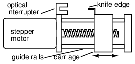
El paso a paso de reluctancia variable impulsa el tornillo de avance.
El eje suele estar equipado con un tornillo de accionamiento. (Cifraanterior) Esto puede mover los cabezales de una unidad de disquete cuando lo ordene el controlador de la unidad de disquete.
{kind=link}
Los motores paso a paso de reluctancia variable se aplican cuando sólo se requiere un nivel moderado de par y un ángulo de paso grueso es adecuado. Una aplicación de este tipo es una unidad de tornillo, como la que se utiliza en una unidad de disquete. Cuando el controlador se enciende, no conoce la posición del carro. Sin embargo, puede impulsar el carro hacia el interruptor óptico, calibrando la posición en la que el filo corta el interruptor como "hogar". El controlador cuenta los pulsos de paso desde esta posición. Siempre que el par de carga no exceda el par del motor, el controlador conocerá la posición del carro.
Resumen: motor paso a paso de reluctancia variable
- El rotor es un cilindro de hierro dulce con polos salientes (que sobresalen).
- Este es el motor paso a paso menos complejo y económico.
- El único tipo paso a paso sin par de retención en la rotación manual de un eje de motor desenergizado.
- Gran ángulo de paso
- A menudo se monta un tornillo de avance en el eje para un movimiento escalonado lineal.
Motor paso a paso de imán permanente
A motor paso a paso de imán permanenteTiene un rotor cilíndrico de imán permanente. El estator suele tener dos devanados. Los devanados podrían tener una derivación central para permitir unaunipolarCircuito conductor donde se cambia la polaridad del campo magnético cambiando un voltaje de un extremo al otro del devanado. AbipolarSe requiere un accionamiento de polaridad alterna para alimentar los devanados sin la toma central. Un paso a paso de imán permanente puro suele tener un ángulo de paso grande. La rotación del eje de un motor desenergizado exhibe un par de retención. Si el ángulo de retención es grande, digamos 7,5oa 90o, es probable que sea un paso a paso de imán permanente en lugar de un paso a paso híbrido (siguiente subsección).
Los motores paso a paso de imán permanente requieren corrientes alternas en fases aplicadas a los dos (o más) devanados. En la práctica, casi siempre se trata de ondas cuadradas generadas a partir de CC mediante electrónica de estado sólido.BipolarEl impulsor son ondas cuadradas que alternan entre polaridades (+) y (-), digamos, +2,5 V a -2,5 V.unipolarEl variador suministra un flujo magnético alterno (+) y (-) a las bobinas desarrollado a partir de un par de ondas cuadradas positivas aplicadas a los extremos opuestos de una bobina con derivación central. La sincronización de la onda bipolar o unipolar es de impulso de onda, paso completo o medio paso.
Accionamiento por onda
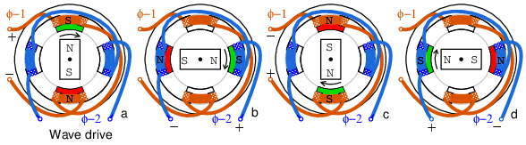
Secuencia de conducción de ondas PM (a) φ1+ , (b) φ2+ , (c) φ1- , (d) φ2-.
Conceptualmente, la unidad más simple esunidad de onda. (Cifraanterior) La secuencia de rotación de izquierda a derecha es positiva φ-1 apunta al rotor norte hacia arriba, (+) φ-2 apunta al rotor norte a la derecha, negativa φ-1 atrae al rotor hacia el norte hacia abajo, (-) φ-2 apunta al rotor hacia la izquierda. Las formas de onda del impulsor de onda a continuación muestran que solo se energiza una bobina a la vez. Si bien es simple, esto no produce tanto torque como otras técnicas de accionamiento.
{kind=link}
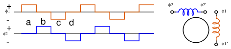
Formas de onda: onda bipolar.
Las formas de onda (Figuraanterior) son bipolares porque ambas polaridades, (+) y (-) impulsan el paso a paso. El campo magnético de la bobina se invierte porque se invierte la polaridad de la corriente de excitación.
{kind=link}
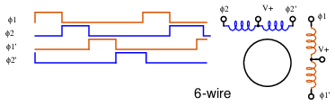
Formas de onda: onda unipolar.
La (Figuraanterior) las formas de onda son unipolares porque solo se requiere una polaridad. Esto simplifica la electrónica de accionamiento, pero requiere el doble de controladores. Hay el doble de formas de onda porque se requiere un par de ondas (+) para producir un campo magnético alterno mediante la aplicación a los extremos opuestos de una bobina con derivación central. El motor requiere campos magnéticos alternos. Estos pueden ser producidos por ondas unipolares o bipolares. Sin embargo, las bobinas del motor deben tener derivaciones centrales para accionamiento unipolar.
{kind=link}
Los motores paso a paso de imanes permanentes se fabrican con varias configuraciones de cables conductores. (Cifraa continuación)
{kind=link}
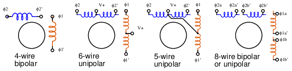
Diagramas de cableado del motor paso a paso.
El motor de 4 hilos sólo puede funcionar mediante formas de onda bipolares. El motor de 6 hilos, la disposición más común, está diseñado para accionamiento unipolar debido a las derivaciones centrales. Sin embargo, puede ser impulsado por ondas bipolares si se ignoran los grifos centrales. El motor de 5 hilos sólo puede funcionar mediante ondas unipolares, ya que la derivación central común interfiere si ambos devanados se activan simultáneamente. La configuración de 8 cables es poco común, pero proporciona la máxima flexibilidad. Puede cablearse para accionamiento unipolar como para motor de 6 o 5 hilos. Se puede conectar un par de bobinas en serie para un accionamiento bipolar de alta tensión y baja corriente, o en paralelo para un accionamiento de baja tensión y alta corriente.
A bobinado bifilarSe produce enrollando las bobinas con dos cables en paralelo, a menudo un cable esmaltado en rojo y verde. Este método produce relaciones de vueltas exactas de 1:1 para devanados con derivación central. Este método de bobinado es aplicable a todos menos a la disposición de 4 cables anterior.
Accionamiento de paso completo
paso completoEl propulsor proporciona más torque que el propulsor de onda porque ambas bobinas se energizan al mismo tiempo. Esto atrae los polos del rotor a medio camino entre los dos polos del campo. (Cifraa continuación)
{kind=link}
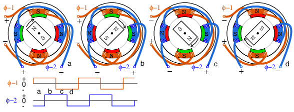
Paso completo, accionamiento bipolar.
Unidad bipolar de paso completo como se muestra en la Figuraanteriortiene el mismo ángulo de paso que el accionamiento por onda. El accionamiento unipolar (no mostrado) requeriría un par de formas de onda unipolares para cada una de las formas de onda bipolares anteriores aplicadas a los extremos de un devanado con derivación central. El accionamiento unipolar utiliza un circuito controlador menos complejo y menos costoso. El coste adicional del accionamiento bipolar se justifica cuando se requiere más par.
Accionamiento de medio paso
El ángulo de paso para una geometría de motor paso a paso determinada se reduce a la mitad conmedio pasoconducir. Esto corresponde al doble de impulsos escalonados por revolución. (Cifraa continuación) El medio paso proporciona una mayor resolución en el posicionamiento del eje del motor. Por ejemplo, acelerar el motor hasta la mitad y mover el cabezal de impresión sobre el papel de una impresora de inyección de tinta duplicaría la densidad de puntos.
{kind=link}
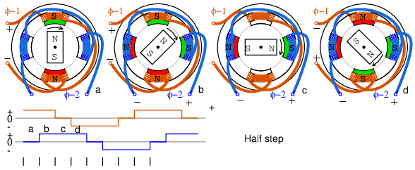
Medio paso, accionamiento bipolar.
El accionamiento de medio paso es una combinación de accionamiento por onda y accionamiento por paso completo con un devanado energizado, seguido de ambos devanados energizados, lo que produce el doble de pasos. Las formas de onda unipolares para el accionamiento de medio paso se muestran arriba. El rotor se alinea con los polos del campo como para el accionamiento por onda y entre los polos como para el accionamiento por paso completo.
El micropaso es posible con controladores especializados. Variando las corrientes a los devanados de forma sinusoidal se pueden interpolar muchos micropasos entre las posiciones normales.
Construction
La construcción de un motor paso a paso de imán permanente es considerablemente diferente de los dibujos anteriores. Es deseable aumentar el número de polos más allá del ilustrado para producir un ángulo de paso más pequeño. También es deseable reducir el número de devanados, o al menos no aumentar el número de devanados para facilitar la fabricación.
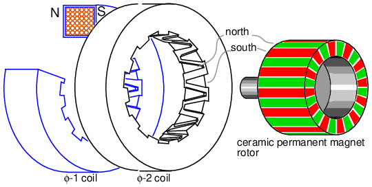
Motor paso a paso de imán permanente, construcción tipo lata de 24 polos.
El paso a paso de imán permanente (Figuraanterior) sólo tiene dos devanados, pero tiene 24 polos en cada una de las dos fases. Este estilo de construcción se conoce comopuede apilar. Un devanado de fase está envuelto con una carcasa de acero dulce, con los dedos llevados al centro. Una fase, de carácter transitorio, tendrá un lado norte y un lado sur. Cada lado se envuelve hasta el centro del donut con doce dedos interdigitados para un total de 24 polos. Estos dedos alternados de norte a sur atraerán el rotor de imán permanente. Si se invirtiera la polaridad de la fase, el rotor saltaría 360o/24 = 15o. No sabemos en qué dirección, cuál no es útil. Sin embargo, si energizamos φ-1 seguido de φ-2, el rotor se moverá 7,5oporque el φ-2 está desplazado (girado) en 7,5ode φ-1. Consulte a continuación la compensación. Y girará en una dirección reproducible si se alternan las fases. La aplicación de cualquiera de las formas de onda anteriores hará girar el rotor de imán permanente.
{kind=link}
Tenga en cuenta que el rotor es un cilindro cerámico de ferrita gris magnetizado en el patrón de 24 polos que se muestra. Esto se puede ver con una película de visor magnético o con limaduras de hierro aplicadas a un envoltorio de papel. Sin embargo, los colores serán verdes tanto para el polo norte como para el sur de la película.
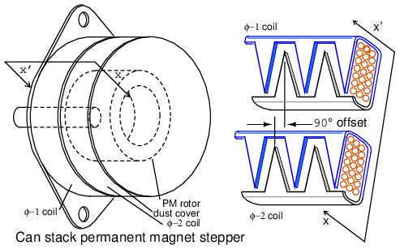
(a) Vista externa de la pila de latas, (b) detalle de desplazamiento del campo.
La construcción estilo lata apilada de un motor paso a paso PM es distintiva y fácil de identificar por las “latas” apiladas. (Cifraanterior) Tenga en cuenta el desplazamiento rotacional entre las dos secciones de fase. Esto es clave para hacer que el rotor siga la conmutación de los campos entre las dos fases.
{kind=link}
Resumen: motor paso a paso de imán permanente
- El rotor es un imán permanente, a menudo un manguito de ferrita magnetizado con numerosos polos.
- La construcción de apilamiento de latas proporciona numerosos polos de una sola bobina con dedos entrelazados de hierro dulce.
- Ángulo de paso de grande a moderado.
- A menudo se utiliza en impresoras de computadoras para hacer avanzar el papel.
Motor paso a paso híbrido
The motor paso a paso híbridoCombina características tanto del paso a paso de reluctancia variable como del paso a paso de imán permanente para producir un ángulo de paso más pequeño. El rotor es un imán permanente cilíndrico, magnetizado a lo largo del eje con dientes radiales de hierro dulce (Figuraa continuación). Las bobinas del estator están enrolladas en polos alternos con los dientes correspondientes. Normalmente hay dos fases de devanado distribuidas entre pares de polos. Este devanado puede tener una derivación central para accionamiento unipolar. El grifo central se consigue mediante unbobinado bifilar, un par de cables enrollados físicamente en paralelo, pero conectados en serie. Los polos norte-sur de una fase cambian de polaridad cuando se invierte la corriente de accionamiento de fase. Se requiere accionamiento bipolar para devanados sin derivación.
{kind=link}
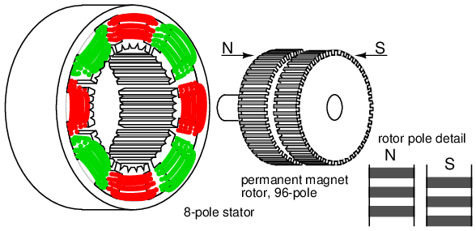
Motor paso a paso híbrido.
Tenga en cuenta que los 48 dientes de una sección del rotor están desplazados medio paso con respecto a la otra. Vea el detalle del polo del rotor arriba. Este desplazamiento de los dientes del rotor también se muestra a continuación. Debido a este desplazamiento, el rotor tiene efectivamente 96 polos entrelazados de polaridad opuesta. Este desplazamiento permite la rotación en pasos de 1/96 de revolución al invertir la polaridad del campo de una fase. Los devanados de dos fases son comunes, como se muestra arriba y abajo. Sin embargo, podría haber hasta cinco fases.
Los dientes del estator en los 8 polos corresponden a los dientes del rotor de 48, excepto por los dientes que faltan en el espacio entre los polos. Así, un polo del rotor, digamos el polo sur, puede alinearse con el estator en 48 posiciones distintas. Sin embargo, los dientes del polo sur están desplazados de los dientes del norte medio diente. Por tanto, el rotor puede alinearse con el estator en 96 posiciones distintas. Este desplazamiento de medio diente se muestra en el detalle del polo del rotor arriba, o en la Figuraa continuación.
Por si esto no fuera lo suficientemente complicado, los polos principales del estator se dividen en dos fases (φ-1, φ-2). Estas fases del estator están desplazadas entre sí un cuarto de diente. Este detalle sólo se puede discernir en los diagramas esquemáticos siguientes. El resultado es que el rotor se mueve en pasos de un cuarto de diente cuando las fases se energizan alternativamente. En otras palabras, el rotor se mueve en 2×96=192 pasos por revolución para el paso a paso anterior.
El dibujo de arriba es representativo de un motor paso a paso híbrido real. Sin embargo, proporcionamos una representación pictórica y esquemática simplificada (Figuraa continuación) para ilustrar detalles que no son obvios anteriormente. Tenga en cuenta el número reducido de bobinas y dientes en el rotor y el estator para simplificar. En las dos figuras siguientes, intentamos ilustrar la rotación de un cuarto de diente producida por las dos fases del estator desplazadas por un cuarto de diente y el desplazamiento de medio diente del rotor. El desplazamiento del estator de un cuarto de diente junto con la sincronización de la corriente de accionamiento también define la dirección de rotación.
{kind=link}
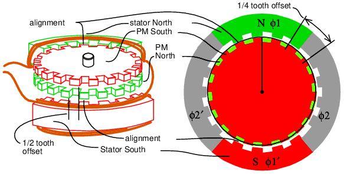
Diagrama esquemático del motor paso a paso híbrido.
Características del esquema paso a paso híbrido.(Cifraanterior)- La parte superior del rotor de imán permanente es el polo sur y la parte inferior es el norte.
- Los dientes norte-sur del rotor están desplazados medio diente.
- Si el estator φ-1 se energiza temporalmente hacia el norte arriba, hacia el sur abajo.
- Los dientes superiores del estator φ-1 se alinean al norte con los dientes superiores del sur del rotor.
- Los dientes inferiores del estator φ-1' se alinean al sur con los dientes inferiores del norte del rotor.
- Un par de torsión suficiente aplicado al eje para superar el par de retención movería el rotor un diente.
- Si se invirtiera la polaridad de φ-1, el rotor se movería medio diente, en dirección desconocida. La alineación sería la parte superior del estator sur con la parte inferior del rotor norte y la parte inferior del estator norte con el rotor sur.
- Los dientes del estator φ-2 no están alineados con los dientes del rotor cuando se energiza φ-1. De hecho, los dientes del estator φ-2 están desplazados en un cuarto de diente. Esto permitirá una rotación de esa cantidad si φ-1 está desenergizado y φ-2 energizado. La polaridad del accionamiento φ-1 y φ-2 determina la dirección de rotación.
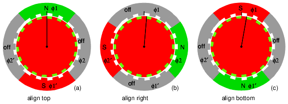
Secuencia de rotación del motor paso a paso híbrido.
Rotación del motor paso a paso híbrido(Cifraanterior){kind=link}
- La parte superior del rotor es un imán permanente hacia el sur y la parte inferior hacia el norte. Los campos φ-1, φ-2 son conmutables: activado, desactivado, inverso.
- (a)φ-1=encendido=norte-arriba, φ-2=apagado.Alinear (de arriba a abajo):φ-1 estator-N:rotor-superior-S, φ-1' estator-S: rotor-inferior-N. Posición inicial, rotación=0.
- (b)φ-1=apagado, φ-2=encendido.Alinear (de derecha a izquierda):φ-2 estator-N-derecha: rotor-arriba-S, φ-2' estator-S: rotor-abajo-N. Gire 1/4 de diente, rotación total = 1/4 de diente.
- (c)φ-1=reversa(encendido), φ-2=apagado.Alinear (de abajo hacia arriba):φ-1 estator-S:rotor-inferior-N, φ-1' estator-N:rotor-superior-S. Gire 1/4 de diente desde la última posición. Rotación total desde el inicio: 1/2 diente.
- No se muestra: φ-1=apagado, φ-2=reverso(encendido).Alinear (de izquierda a derecha):Rotación total: 3/4 diente.
- No se muestra: φ-1=encendido, φ-2=apagado (igual que (a)).Alinear (de arriba a abajo):Rotación total 1 diente.
Un motor paso a paso sin alimentación con par de retención es un paso a paso de imán permanente o un paso a paso híbrido. El paso a paso híbrido tendrá un ángulo de paso pequeño, mucho menor que el de 7,5ode motores paso a paso de imán permanente. El ángulo de paso podría ser una fracción de grado, correspondiente a unos pocos cientos de pasos por revolución.
Resumen: motor paso a paso híbrido
- El ángulo de paso es más pequeño que el de reluctancia variable o los de imán permanente.
- El rotor es un imán permanente con dientes finos. Los dientes norte y sur están desplazados medio diente para lograr un ángulo de paso más pequeño.
- Los polos del estator tienen dientes finos a juego del mismo paso que el rotor.
- Los devanados del estator se dividen en al menos dos fases.
- Los polos de uno de los devanados del estator están desplazados por un cuarto de diente para un ángulo de paso aún menor.
Brushless DC motor
Los motores de CC sin escobillas se desarrollaron a partir de motores de CC con escobillas convencionales con disponibilidad de semiconductores de potencia de estado sólido. Entonces, ¿por qué hablamos de motores de CC sin escobillas en un capítulo sobre motores de CA? Los motores de CC sin escobillas son similares a los motores síncronos de CA. La principal diferencia es que los motores síncronos desarrollan una FEM trasera sinusoidal, en comparación con una FEM trasera rectangular o trapezoidal para los motores de CC sin escobillas. Ambos tienen campos magnéticos giratorios creados por el estator que producen torque en un rotor magnético.
Los motores síncronos suelen ser de gran tamaño, de varios kilovatios, a menudo con rotores electromagnéticos. Los motores verdaderamente síncronos se consideran de una sola velocidad, un submúltiplo de la frecuencia de la línea eléctrica. Los motores de CC sin escobillas tienden a ser pequeños: desde unos pocos vatios hasta decenas de vatios, con rotores de imanes permanentes. La velocidad de un motor de CC sin escobillas no es fija a menos que sea impulsada por un bucle bloqueado en fase esclavo de una frecuencia de referencia. El estilo de construcción es cilíndrico o tipo panqueque. (Cifras y a continuación)
{kind=link}
{kind=link}
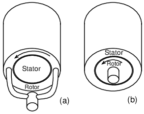
Construcción cilíndrica: (a) rotor exterior, (b) rotor interior.
La construcción más habitual, cilíndrica, puede adoptar dos formas (Figuraanterior). El estilo cilíndrico más común es con el rotor en el interior, arriba a la derecha. Este estilo de motor se utiliza en unidades de disco duro. También es posible colocar el rotor en el exterior rodeando al estator. Tal es el caso de los motores de ventilador de CC sin escobillas, sin eje. Este estilo de construcción puede ser corto y grueso. Sin embargo, la dirección del flujo magnético es radial con respecto al eje de rotación.
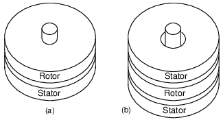
Construcción del motor tipo panqueque: (a) estator simple, (b) estator doble.
Los motores tipo pancake de alto torque pueden tener bobinas de estator en ambos lados del rotor (Figuraanterior-b).Las aplicaciones de par más bajo, como los motores de unidad de disquete, son suficientes con una bobina de estator en un lado del rotor (Figuraanterior-a). La dirección del flujo magnético es axial, es decir, paralela al eje de rotación.
La función de conmutación puede ser realizada por varios sensores de posición del eje: codificador óptico, codificador magnético (resolver, sincro, etc), o sensores magnéticos de efecto Hall. Los motores pequeños y económicos utilizan sensores de efecto Hall. (Cifraa continuación) Un sensor de efecto Hall es un dispositivo semiconductor donde el flujo de electrones se ve afectado por un campo magnético perpendicular a la dirección del flujo de corriente. Parece una red de resistencia variable de cuatro terminales. Los voltajes en las dos salidas son complementarios. La aplicación de un campo magnético al sensor provoca un pequeño cambio de voltaje en la salida. La salida Hall puede accionar un comparador para proporcionar una conducción más estable al dispositivo de potencia. O puede impulsar una etapa de transistor compuesto si está polarizado adecuadamente. Los sensores de efecto Hall más modernos pueden contener un amplificador integrado y circuitos digitales. Este dispositivo de 3 conductores puede accionar directamente el transistor de potencia que alimenta un devanado de fase. El sensor debe montarse cerca del rotor de imán permanente para detectar su posición.
{kind=link}
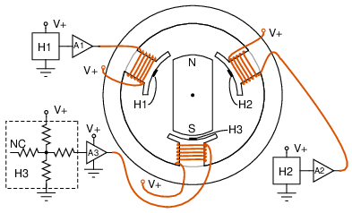
Los sensores de efecto Hall conmutan el motor CC sin escobillas de 3 φ.
El motor cilíndrico simple de 3 φ Figuraanteriores conmutado por un dispositivo de efecto Hall para cada una de las tres fases del estator. El dispositivo Hall detecta la posición cambiante del rotor de imán permanente a medida que cambia la polaridad del polo del rotor que pasa. Esta señal Hall se amplifica para que las bobinas del estator funcionen con la corriente adecuada. Como no se muestran aquí, las señales Hall pueden procesarse mediante lógica combinatoria para obtener formas de onda de excitación más eficientes.
El motor cilíndrico anterior podría impulsar un disco duro si estuviera equipado con un bucle de bloqueo en fase (PLL) para mantener una velocidad constante. Un circuito similar podría accionar el motor de la unidad de disquete tipo pancake (Figuraa continuación). Nuevamente, necesitaría un PLL para mantener una velocidad constante.
{kind=link}
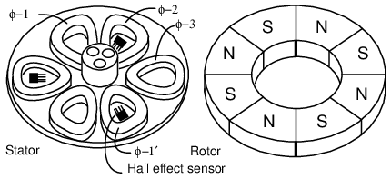
Motor tipo panqueque sin escobillas
El motor tipo pancake de 3 φ (Figuraanterior) tiene 6 polos de estator y 8 polos de rotor. El rotor es un anillo de ferrita plano magnetizado con ocho polos alternos magnetizados axialmente. No mostramos que el rotor esté cubierto por una placa de acero dulce para montarlo en el cojinete en el medio del estator. La placa de acero también ayuda a completar el circuito magnético. Los polos del estator también están montados sobre una placa de acero, lo que ayuda a cerrar el circuito magnético. Las bobinas planas del estator son trapezoidales para ajustarse más estrechamente a las bobinas y aproximarse a los polos del rotor. Las bobinas de 6 estatores constan de tres fases de devanado.
Si las tres fases del estator se energizaran sucesivamente, se generaría un campo magnético giratorio. El rotor de imán permanente seguiría como en el caso de un motor síncrono. Un rotor de dos polos seguiría este campo a la misma velocidad de rotación que el campo giratorio. Sin embargo, nuestro rotor de 8 polos girará a un submúltiplo de esta velocidad debido a los polos adicionales en el rotor.
El motor del ventilador CC sin escobillas (Figuraa continuación) tiene estas características:
{kind=link}
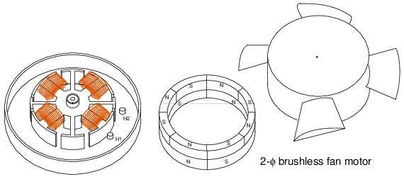
Motor de ventilador sin escobillas, 2-φ.
- El estator tiene 2 fases distribuidas en 4 polos.
- Hay 4 polos salientes sin devanados para eliminar puntos de torsión cero.
- El rotor tiene cuatro polos de accionamiento principales.
- El rotor tiene 8 polos superpuestos para ayudar a eliminar los puntos de torsión cero.
- Los sensores de efecto Hall están espaciados a 45ofísico.
- La carcasa del ventilador se coloca encima del rotor, que se coloca sobre el estator.
El objetivo de un motor de ventilador sin escobillas es minimizar el coste de fabricación. Este es un incentivo para trasladar productos de menor rendimiento de una configuración de 3-φ a una de 2-φ. Dependiendo de cómo se acciona, se le puede llamar motor de 4 φ.
Quizás recuerde que los motores de CC convencionales no pueden tener un número par de polos de armadura (2,4, etc.) si van a tener arranque automático, siendo común 3,5,7. Por lo tanto, es posible que un hipotético motor de 4 polos se detenga con un par mínimo, donde no se puede arrancar desde el reposo. La adición de los cuatro pequeños polos salientes sin devanados superpone un par ondulado sobre la curva de par versus posición. Cuando este par ondulado se suma a la curva de par energizado normal, el resultado es que los mínimos de par se eliminan parcialmente. Esto hace posible arrancar el motor en todas las posiciones de parada posibles. La adición de ocho polos de imán permanente al rotor de imán permanente normal de 4 polos superpone un pequeño par de ondulación del segundo armónico sobre el par de ondulación normal de 4 polos. Esto elimina aún más los mínimos de par. Mientras el par mínimo no baje a cero, deberíamos poder arrancar el motor. Cuanto más éxito tengamos en eliminar los mínimos de par, más fácil será el arranque del motor.
El estator de 2-φ requiere que los sensores Hall estén separados por 90oeléctrico. Si el rotor fuera un rotor de 2 polos, los sensores Hall se colocarían 90ofísico. Como tenemos un rotor de imanes permanentes de 4 polos, los sensores deben colocarse 45ofisico para alcanzar los 90oespaciamiento eléctrico. Observe el espacio entre pasillos arriba. La mayor parte del par se debe a la interacción de las bobinas interiores del estator de 2 φ con la sección de 4 polos del rotor. Además, la sección de 4 polos del rotor debe estar en la parte inferior para que los sensores Hall detecten las señales de conmutación adecuadas. La sección del rotor de 8 polos sirve únicamente para mejorar el arranque del motor.
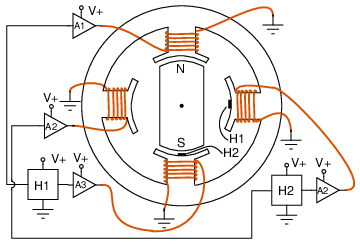
Motor DC sin escobillas de 2 φ con accionamiento push-pull.
En la figuraanterior, el accionamiento push-pull de 2-φ (también conocido como accionamiento de 4-φ) utiliza dos sensores de efecto Hall para accionar cuatro devanados. Los sensores están espaciados 90oaparte electrico, que es 90ofísico para un rotor unipolar. Dado que el sensor Hall tiene dos salidas complementarias, un sensor proporciona conmutación para dos devanados opuestos.
{kind=link}
Motores de inducción polifásicos de Tesla
La mayoría de los motores de CA son motores de inducción. Se prefieren los motores de inducción debido a su robustez y simplicidad. De hecho, el 90% de los motores industriales son motores de inducción.
Nikola Tesla concibió los principios básicos del motor de inducción polifásico en 1883 y tenía un modelo de medio caballo de fuerza (400 vatios) en 1888. Tesla vendió los derechos de fabricación a George Westinghouse por 65.000 dólares.
La mayoría de los motores industriales grandes (> 1 hp o 1 kW) sonmotores de inducción polifásicos. Por polifásico, queremos decir que el estator contiene múltiples devanados distintos por polo del motor, impulsados por las correspondientes ondas sinusoidales desplazadas en el tiempo. En la práctica, se trata de dos o tres fases. Los grandes motores industriales son trifásicos. Si bien incluimos numerosas ilustraciones de motores bifásicos para simplificar, debemos enfatizar que casi todos los motores polifásicos son trifásicos. Pormotor de inducción, queremos decir que los devanados del estator inducen un flujo de corriente en los conductores del rotor, como un transformador, a diferencia de un motor conmutador de CC con escobillas.
Construction
Un motor de inducción está compuesto por un rotor, conocido como armadura, y un estator que contiene devanados conectados a una fuente de energía polifásica, como se muestra en la Figuraa continuación. El motor de inducción bifásico simple que aparece a continuación es similar al motor de 1/2 caballo de fuerza que Nikola Tesla introdujo en 1888.
{kind=link}
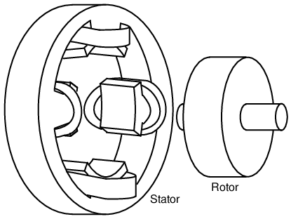
Motor de inducción polifásico Tesla.
El estator en la figura.anteriorEstá enrollado con pares de bobinas correspondientes a las fases de energía eléctrica disponibles. El estator del motor de inducción bifásico de arriba tiene 2 pares de bobinas, un par para cada una de las dos fases de CA. Las bobinas individuales de un par están conectadas en serie y corresponden a los polos opuestos de un electroimán. Es decir, una bobina corresponde a un polo N y la otra a un polo S hasta que la fase de CA cambia de polaridad. El otro par de bobinas está orientado 90oen el espacio al primer par. Este par de bobinas está conectada a CA desplazada en el tiempo 90oen el caso de un motor bifásico. En la época de Tesla, la fuente de las dos fases de CA era un alternador de dos fases.
El estator en la figura.anterior has saliente, polos que sobresalen obvios, como los utilizados en los primeros motores de inducción de Tesla. Este diseño se utiliza hasta el día de hoy para motores de potencia subfraccional (<50 vatios).Sin embargo, para motores más grandes se obtienen menos pulsaciones de par y mayor eficiencia si las bobinas están incrustadas en ranuras cortadas en las laminaciones del estator. (Cifraa continuación)
{kind=link}
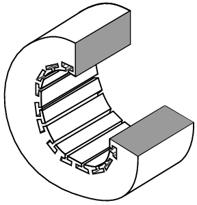
Marco del estator que muestra ranuras para los devanados.
Las laminaciones del estator son anillos delgados aislados con ranuras perforadas a partir de láminas de acero de calidad eléctrica. Una pila de estos se fija mediante tornillos en los extremos, que también pueden sujetar las carcasas de los extremos.
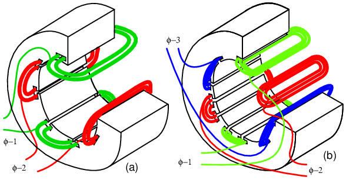
Estator con devanados (a) 2-φ y (b) 3-φ.
En la figuraanterior, en las ranuras del estator se han instalado los devanados tanto para un motor bifásico como para un motor trifásico. Las bobinas se enrollan en un dispositivo externo y luego se introducen en las ranuras. El aislamiento encajado entre la periferia de la bobina y la ranura protege contra la abrasión.
{kind=link}
Los devanados del estator reales son más complejos que los devanados individuales por polo en la Figuraanterior. Comparando el motor 2-φ con el motor 2-φ de Tesla con polos salientes, el número de bobinas es el mismo. En los motores grandes reales, un devanado de polo se divide en bobinas idénticas insertadas en muchas ranuras más pequeñas que las anteriores.Este grupo se llamacinturón de fase. Ver figuraa continuación. Las bobinas distribuidas del cinturón de fases cancelan algunos de los armónicos impares, produciendo una distribución del campo magnético más sinusoidal a través del polo. Esto se muestra en la sección del motor síncrono. Las ranuras en el borde del poste pueden tener menos vueltas que las otras ranuras. Las ranuras de los bordes pueden contener devanados de dos fases. Es decir, los cinturones de fases se superponen.
La clave de la popularidad del motor de inducción de CA es la simplicidad, como lo demuestra el rotor simple (Figuraa continuación). El rotor consta de un eje, un rotor laminado de acero y una placa de cobre o aluminio incrustada.jaula de ardilla, mostrado en (b) retirado del rotor. En comparación con la armadura de un motor de CC, no hay conmutador. Esto elimina las escobillas, los arcos, las chispas, el polvo de grafito, el ajuste y reemplazo de las escobillas y el remecanizado del conmutador.
{kind=link}
Rotor laminado con (a) jaula de ardilla integrada, (b) jaula conductora extraída del rotor.
Los conductores de jaula de ardilla pueden estar torcidos o torcidos con respecto al eje. La desalineación con las ranuras del estator reduce las pulsaciones de par.
Tanto el núcleo del rotor como el del estator están compuestos por una pila de laminaciones aisladas. Las laminaciones están recubiertas con óxido o barniz aislante para minimizar las pérdidas por corrientes parásitas. La aleación utilizada en las laminaciones se selecciona para tener bajas pérdidas por histéresis.
Teoría de operación
Una breve explicación del funcionamiento es que el estator crea un campo magnético giratorio que arrastra el rotor.
La teoría del funcionamiento de los motores de inducción se basa en un campo magnético giratorio. Una forma de crear un campo magnético giratorio es hacer girar un imán permanente como se muestra en la Figuraa continuación. Si las líneas de flujo magnético en movimiento cortan un disco conductor, éste seguirá el movimiento del imán. Las líneas de flujo que cortan el conductor inducirán un voltaje y el consiguiente flujo de corriente en el disco conductor. Este flujo de corriente crea un electroimán cuya polaridad se opone al movimiento del imán permanente.Ley de Lenz. La polaridad del electroimán es tal que tira contra el imán permanente. El disco sigue con un poco menos de velocidad que el imán permanente.
{kind=link}
El campo magnético giratorio produce torsión en el disco conductor.
El par desarrollado por el disco es proporcional al número de líneas de flujo que cortan el disco y a la velocidad a la que lo corta. Si el disco girara a la misma velocidad que el imán permanente, no habría flujo que cortara el disco, ni flujo de corriente inducida, ni campo electromagnético, ni torsión. Por lo tanto, la velocidad del disco siempre será inferior a la del imán permanente giratorio, de modo que las líneas de flujo que cortan el disco inducen una corriente y crean un campo electromagnético en el disco, que sigue al imán permanente. Si se aplica una carga al disco, ralentizándolo, se desarrollará más torsión a medida que más líneas de flujo corten el disco. El par es proporcional adeslizar, el grado en que el disco cae detrás del imán giratorio. Más deslizamiento corresponde a más flujo cortando el disco conductor, desarrollando más torque.
Un velocímetro analógico de corrientes parásitas para automóviles se basa en el principio ilustrado anteriormente. Con el disco sujeto por un resorte, la deflexión del disco y de la aguja es proporcional a la velocidad de rotación del imán.
Un campo magnético giratorio es creado por dos bobinas colocadas en ángulo recto entre sí, impulsadas por corrientes que son 90odesfasado. Esto no debería sorprenderle si está familiarizado con los patrones del osciloscopio Lissajous.
Fuera de fase (90o) las ondas sinusoidales producen un patrón circular de Lissajous.
En la figuraanterior, se produce un Lissajous circular accionando las entradas del osciloscopio horizontal y vertical con 90oondas sinusoidales desfasadas. Comenzando en (a) con una deflexión máxima “X” y mínima “Y”, la traza se mueve hacia arriba y hacia la izquierda hacia (b). Entre (a) y (b) las dos formas de onda son iguales a 0,707 Vpka los 45o. Este punto (0.707, 0.707) cae en el radio del círculo entre (a) y (b). La traza se mueve a (b) con una deflexión mínima “X” y máxima “Y”. Con una deflexión máxima negativa “X” y mínima “Y”, la traza se mueve a (c). Luego, con un mínimo de “X” y un máximo de “Y” negativo, se mueve a (d) y regresa a (a), completando un ciclo.
{kind=link}
Círculo de seguimiento del seno del eje X y del coseno del eje Y.
Cifraanteriormuestra los dos 90oOndas sinusoidales desfasadas aplicadas a placas de desviación de osciloscopios que se encuentran en ángulo recto en el espacio. Si este no fuera el caso, se mostraría una línea unidimensional. La combinación de 90oondas sinusoidales en fase y desviación en ángulo recto, dan como resultado un patrón bidimensional: un círculo. Este círculo se traza mediante un haz de electrones que gira en sentido antihorario.
{kind=link}
Como referencia, Figuraa continuaciónmuestra por qué las ondas sinusoidales en fase no producirán un patrón circular. La deflexión igual de “X” e “Y” mueve el punto iluminado desde el origen en (a) hasta la derecha (1,1) en (b), de regreso a la izquierda hasta el origen en (c), hacia abajo a la izquierda hasta (-1.-1) en (d), y de regreso a la derecha hasta el origen. La línea se produce mediante deflexiones iguales a lo largo de ambos ejes; y=x es una línea recta.
{kind=link}
No hay movimiento circular debido a formas de onda en fase.
Si un par de 90oLas ondas sinusoidales desfasadas producen un Lissajous circular, un par similar de corrientes debería poder producir un campo magnético giratorio circular. Este es el caso de un motor bifásico. Por analogía tres devanados colocados 120oseparados en el espacio, y alimentados con los correspondientes 120oLas corrientes en fase también producirán un campo magnético giratorio.
Campo magnético giratorio desde 90oondas sinusoidales en fase.
como los 90oondas sinusoidales en fase, Figuraanterior, avanzando desde los puntos (a) a (d), el campo magnético gira en sentido antihorario (figuras a-d) de la siguiente manera:
{kind=link}
- (a) φ-1 máximo, φ-2 cero
- (a') φ-1 70%, φ-2 70%
- (b) φ-1 cero, φ-2 máximo
- (c) φ-1 máximo negativo, φ-2 cero
- (d) φ-1 cero, φ-2 máximo negativo
Velocidad del motor
La velocidad de rotación de un campo magnético giratorio del estator está relacionada con el número de pares de polos por fase del estator. La figura de “a toda velocidad”a continuacióntiene un total de seis polos o tres pares de polos y tres fases. Sin embargo, sólo hay un par de polos por fase: el número que necesitamos. El campo magnético girará una vez por ciclo de onda sinusoidal. En el caso de una potencia de 60 Hz, el campo gira 60 veces por segundo o 3600 revoluciones por minuto (rpm). Para una potencia de 50 Hz, gira a 50 rotaciones por segundo, o 3000 rpm. Las de 3600 y 3000 rpm, son lasvelocidad sincrónicadel motor. Aunque el rotor de un motor de inducción nunca alcanza esta velocidad, ciertamente es un límite superior. Si duplicamos el número de polos del motor, la velocidad sincrónica se reduce a la mitad porque el campo magnético gira 180oen el espacio para 360ode onda sinusoidal eléctrica.
{kind=link}
Duplicar los polos del estator reduce a la mitad la velocidad sincrónica.
La velocidad sincrónica viene dada por:
Ns= 120·f/P
Ns= velocidad síncrona en rpm
f = frequency of applied power, Hz
P = total number of poles per phase, a multiple of 2
Example:
La figura de la “media velocidad”anteriorTiene cuatro polos por fase (trifásico). La velocidad síncrona para una potencia de 50 Hz es:
S = 120·50/4 = 1500 rpm
La breve explicación del motor de inducción es que el campo magnético giratorio producido por el estator arrastra al rotor consigo.
La explicación más larga y correcta es que el campo magnético del estator induce una corriente alterna en los conductores de jaula de ardilla del rotor, que constituye un secundario del transformador. Esta corriente inducida del rotor crea a su vez un campo magnético. El campo magnético giratorio del estator interactúa con este campo del rotor. El campo del rotor intenta alinearse con el campo del estator giratorio. El resultado es la rotación del rotor de jaula de ardilla. Si no hubiera carga de par mecánico del motor, rodamientos, viento u otras pérdidas, el rotor giraría a la velocidad sincrónica. Sin embargo, eldeslizarentre el rotor y el campo del estator de velocidad síncrona se desarrolla el par. Es el flujo magnético que corta los conductores del rotor a medida que se desliza lo que desarrolla el par. Por tanto, un motor cargado se deslizará en proporción a la carga mecánica. Si el rotor funcionara a velocidad síncrona, no habría flujo del estator que cortara el rotor, no habría corriente inducida en el rotor ni par.
Torque
Cuando se aplica potencia al motor por primera vez, el rotor está en reposo, mientras que el campo magnético del estator gira a la velocidad síncrona Ns. El campo del estator corta el rotor a la velocidad síncrona Ns. La corriente inducida en las espiras en cortocircuito del rotor es máxima, al igual que la frecuencia de la corriente, la frecuencia de línea. A medida que el rotor se acelera, la velocidad a la que el flujo del estator corta el rotor es la diferencia entre la velocidad sincrónica Nsy la velocidad real del rotor N, o (Ns-N). La relación entre el flujo real que corta el rotor y la velocidad síncrona se define comodeslizar:
s = (Ns- N)/Ns
donde: nortes= velocidad sincrónica, N = velocidad del rotor
La frecuencia de la corriente inducida en los conductores del rotor es tan alta como la frecuencia de la línea en el arranque del motor, y disminuye a medida que el rotor se acerca a la velocidad sincrónica.Frecuencia del rotorestá dada por:
fr= s·f
donde: s = deslizamiento, f = frecuencia de la línea eléctrica del estator
El deslizamiento al 100% del par suele ser del 5% o menos en los motores de inducción. Por lo tanto, para f = frecuencia de línea de 50 Hz, la frecuencia de la corriente inducida en el rotor fr= 0,05·50 = 2,5 Hz. ¿Por qué es tan bajo? El campo magnético del estator gira a 50 Hz. La velocidad del rotor es un 5% menor. El campo magnético giratorio sólo corta el rotor a 2,5 Hz. Los 2,5 Hz son la diferencia entre la velocidad síncrona y la velocidad real del rotor. Si el rotor gira un poco más rápido, a velocidad síncrona, ningún flujo cortará el rotor en absoluto, fr= 0.
Par y velocidad vs %deslizamiento. %NORTEs=%Velocidad sincrónica.
La figuraanteriorEl gráfico muestra que el par de arranque conocido comopar de rotor bloqueado(LRT) es superior al 100% delpar de carga completa(FLT), la clasificación de torsión continua segura. El par del rotor bloqueado es aproximadamente el 175 % del FLT para el motor de ejemplo que se muestra arriba. Corriente inicial conocida comocorriente de rotor bloqueado(LRC) es el 500% decorriente de carga completa(FLC), la corriente de funcionamiento segura. La corriente es alta porque es análoga a un secundario en cortocircuito en un transformador. A medida que el rotor comienza a girar, el par puede disminuir un poco para ciertas clases de motores hasta un valor conocido comopar de torsión. Este es el valor de par más bajo jamás encontrado por el motor de arranque. A medida que el rotor gana el 80% de la velocidad sincrónica, el par aumenta del 175% al 300% del par a plena carga. Estepar de rupturase debe a un deslizamiento mayor de lo normal del 20%. La corriente ha disminuido sólo ligeramente en este punto, pero disminuirá rápidamente más allá de este punto. A medida que el rotor acelera hasta un pequeño porcentaje de la velocidad síncrona, tanto el par como la corriente disminuirán sustancialmente. El deslizamiento será sólo de un pequeño porcentaje durante el funcionamiento normal. Para un motor en funcionamiento, cualquier parte de la curva de par por debajo del 100% del par nominal es normal. La carga del motor determina el punto de funcionamiento en la curva de par. Si bien el par y la corriente del motor pueden exceder el 100 % durante unos segundos durante el arranque, el funcionamiento continuo por encima del 100 % puede dañar el motor. Cualquier carga de par del motor por encima del par de ruptura detendrá el motor. El par, el deslizamiento y la corriente se aproximarán a cero en una condición de carga "sin par mecánico". Esta condición es análoga a un transformador secundario abierto.
{kind=link}
Hay varios diseños básicos de motores de inducción (Figuraa continuación) que muestra una variación considerable con respecto a la curva de torsión anterior. Los diferentes diseños están optimizados para arrancar y ejecutar diferentes tipos de cargas. El par de rotor bloqueado (LRT) para varios diseños y tamaños de motores oscila entre el 60% y el 350% del par de carga total (FLT). La corriente de arranque o corriente de rotor bloqueado (LRC) puede oscilar entre el 500% y el 1400% de la corriente de carga completa (FLC). Este consumo de corriente puede presentar un problema de arranque para motores de inducción grandes.
{kind=link}
Clases de diseño NEMA
Varias clases (o diseños) estándar para motores, correspondientes a las curvas de par (Figuraa continuación) se han desarrollado para impulsar mejor varios tipos de cargas. La Asociación Nacional de Fabricantes Eléctricos (NEMA) ha especificado las clases de motor A, B, C y D para cumplir con estos requisitos de accionamiento. Las clases N y H similares de la Comisión Electrotécnica Internacional (IEC) corresponden a diseños NEMA B y C respectivamente.
Características para diseños NEMA.
Todos los motores, excepto los de clase D, funcionan con un deslizamiento del 5 % o menos a plena carga.
- Clase B (IEC Clase N)Los motores son el motor predeterminado que se utiliza en la mayoría de las aplicaciones. Con un par de arranque de LRT = 150 % a 170 % de FLT, puede arrancar la mayoría de las cargas, sin una corriente de arranque excesiva (LRT). La eficiencia y el factor de potencia son altos. Por lo general, impulsa bombas, ventiladores y máquinas herramienta.
- Clase AEl par de arranque es el mismo que el de la clase B. El par de caída y la corriente de arranque (LRT) son mayores. Este motor maneja sobrecargas transitorias como las que se encuentran en las máquinas de moldeo por inyección.
- Clase C (IEC Clase H)tiene un par de arranque más alto que la clase A y B en LRT = 200% de FLT. Este motor se aplica a cargas de arranque difícil que deben accionarse a velocidad constante, como transportadores, trituradoras y bombas y compresores alternativos.
- Clase DLos motores tienen el par de arranque más alto (LRT) junto con una corriente de arranque baja debido al alto deslizamiento (5% a 13% en FLT). El alto deslizamiento da como resultado una velocidad más baja. La regulación de la velocidad es deficiente. Sin embargo, el motor sobresale al impulsar cargas de velocidad muy variable, como aquellas que requieren un volante de almacenamiento de energía. Las aplicaciones incluyen punzonadoras, cizallas y elevadores.
- Clase ELos motores son una versión de mayor eficiencia de la clase B.
- Clase FLos motores tienen LRC, LRT y par de ruptura mucho más bajos que los de clase B. Impulsan cargas constantes de fácil arranque.
Factor de potencia
Los motores de inducción presentan un factor de potencia retrasado (inductivo) a la línea eléctrica. El factor de potencia en motores grandes de alta velocidad completamente cargados puede ser tan favorable como el 90% para motores grandes de alta velocidad. A 3/4 de la carga completa, el mayor factor de potencia del motor de alta velocidad puede ser del 92%. El factor de potencia para motores pequeños de baja velocidad puede ser tan bajo como el 50%. Al arrancar, el factor de potencia puede estar en el rango del 10% al 25%, aumentando a medida que el rotor alcanza velocidad.
El factor de potencia (PF) varía considerablemente con la carga mecánica del motor (Figuraa continuación). Un motor descargado es análogo a un transformador sin carga resistiva en el secundario. Se refleja poca resistencia desde el secundario (rotor) al primario (estator). Por lo tanto, la línea eléctrica ve una carga reactiva, tan baja como 10% PF. A medida que se carga el rotor, un componente resistivo creciente se refleja del rotor al estator, aumentando el factor de potencia.
{kind=link}
Factor de potencia y eficiencia del motor de inducción.
Efficiency
Los motores trifásicos grandes son más eficientes que los motores trifásicos más pequeños y que la mayoría de los motores monofásicos. La eficiencia de un motor de inducción grande puede llegar al 95% a plena carga, aunque el 90% es más común. La eficiencia de un motor de inducción con carga ligera o sin carga es deficiente porque la mayor parte de la corriente participa en el mantenimiento del flujo magnetizante. A medida que aumenta la carga de par, se consume más corriente para generar el par, mientras que la corriente asociada con la magnetización permanece fija. La eficiencia al 75% FLT puede ser ligeramente mayor que la del 100% FLT. La eficiencia disminuye un pequeño porcentaje al 50 % FLT y un pequeño porcentaje más al 25 % FLT. La eficiencia sólo se vuelve pobre por debajo del 25% FLT. La variación de la eficiencia con la carga se muestra en la Figuraanterior
Los motores de inducción suelen estar sobredimensionados para garantizar que su carga mecánica pueda arrancarse y accionarse en todas las condiciones de funcionamiento. Si un motor polifásico se carga a menos del 75 % del par nominal, donde la eficiencia alcanza su punto máximo, la eficiencia sufre sólo ligeramente hasta el 25 % de FLT.
Corrector de factor de potencia Nola
Frank Nola de la NASA propuso un corrector del factor de potencia (PFC) como dispositivo de ahorro de energía para motores de inducción monofásicos a finales de los años 1970. Se basa en la premisa de que un motor de inducción que no está completamente cargado es menos eficiente y tiene un factor de potencia más bajo que un motor completamente cargado. Por lo tanto, se puede ahorrar energía en motores parcialmente cargados, en particular en motores 1-φ. La energía consumida para mantener el campo magnético del estator es relativamente fija con respecto a los cambios de carga. Si bien no se puede ahorrar nada en un motor completamente cargado, el voltaje de un motor parcialmente cargado se puede reducir para disminuir la energía requerida para mantener el campo magnético. Esto aumentará el factor de potencia y la eficiencia. Este era un buen concepto para los motores monofásicos notoriamente ineficientes para los que estaba destinado.
Este concepto no es muy aplicable a motores trifásicos grandes. Debido a su alta eficiencia (90%+), no se puede ahorrar mucha energía. Además, un motor con una eficiencia del 95 % sigue teniendo una eficiencia del 94 % con un par de carga total (FLT) del 50 % y una eficiencia del 90 % con un FLT del 25 %. El ahorro potencial de energía al pasar del 100% FLT al 25% FLT es la diferencia en eficiencia 95% - 90% = 5%. Esto no es el 5% de la potencia en potencia a plena carga, sino el 5% de la potencia en potencia con carga reducida. El corrector del factor de potencia de Nola podría ser aplicable a un motor trifásico que está inactivo la mayor parte del tiempo (por debajo del 25 % de FLT), como una punzonadora. Se ha estimado que el período de amortización del costoso controlador electrónico no es atractivo para la mayoría de las aplicaciones. Sin embargo, podría resultar económico como parte de un arrancador de motor electrónico o un control de velocidad.[7]
Alternador con motor de inducción
Un motor de inducción puede funcionar como alternador si es impulsado por un par superior al 100% de la velocidad síncrona. (Cifraa continuación) Esto corresponde a un pequeño porcentaje de deslizamiento “negativo”, digamos -1% de deslizamiento. Esto significa que a medida que hacemos girar el motor más rápido que la velocidad síncrona, el rotor avanza un 1% más rápido que el campo magnético giratorio del estator. Normalmente tiene un retraso del 1% en un motor. Dado que el rotor corta el campo magnético del estator en la dirección opuesta (en dirección), el rotor induce un voltaje en el estator y devuelve energía eléctrica a la línea eléctrica.
{kind=link}
El par negativo convierte el motor de inducción en un generador.
talgenerador de induccióndebe ser excitado por una fuente “viva” de 50 o 60 Hz de potencia. No se puede generar energía en caso de un corte de energía de la compañía eléctrica. Este tipo de alternador parece inadecuado como fuente de energía de reserva. Como generador de turbina eólica de energía auxiliar, tiene la ventaja de no requerir un interruptor de desconexión automática por falla de energía para proteger a los equipos de reparación. Es a prueba de fallos.
Las pequeñas instalaciones remotas (de la red eléctrica) pueden autoexcitarse colocando condensadores en paralelo con las fases del estator. Si se elimina la carga, el magnetismo residual puede generar una pequeña cantidad de flujo de corriente. Los condensadores permiten que esta corriente fluya sin disipar energía. A medida que el generador alcanza su máxima velocidad, el flujo de corriente aumenta para suministrar una corriente magnetizante al estator. La carga se puede aplicar en este punto. La regulación de voltaje es deficiente. Un motor de inducción se puede convertir en un generador autoexcitado añadiendo condensadores.[6]
El procedimiento de arranque consiste en acelerar la turbina eólica en modo motor mediante la aplicación de voltaje normal de la línea eléctrica al estator. Cualquier velocidad de turbina inducida por el viento que exceda la velocidad sincrónica desarrollará un par negativo, devolviendo energía a la línea eléctrica, invirtiendo la dirección normal del medidor de kilovatios-hora eléctricos. Mientras que un motor de inducción presenta un factor de potencia retrasado con respecto a la línea eléctrica, un alternador de inducción presenta un factor de potencia adelantado. Los generadores de inducción no se utilizan mucho en las centrales eléctricas convencionales. La velocidad del accionamiento de la turbina de vapor es constante y controlable según lo requieren los alternadores sincrónicos. Los alternadores síncronos también son más eficientes.
La velocidad de una turbina eólica es difícil de controlar y está sujeta a la variación de la velocidad del viento mediante ráfagas. Un alternador de inducción es más capaz de hacer frente a estas variaciones debido al deslizamiento inherente. Esto tensiona menos el tren de engranajes y los componentes mecánicos que un generador síncrono. Sin embargo, esta variación de velocidad permitida sólo asciende a aproximadamente el 1%. Por lo tanto, un generador de inducción conectado en línea directa se considera de velocidad fija en una turbina eólica. VerGenerador de inducción de doble alimentaciónpara un verdadero alternador de velocidad variable. Se pueden cambiar múltiples generadores o múltiples devanados en un eje común para proporcionar una velocidad alta y baja para adaptarse a condiciones de viento variables.
Arranque y control de velocidad del motor
Algunos motores de inducción pueden consumir más del 1000% de la corriente a plena carga durante el arranque; sin embargo, unos cientos por ciento son más comunes. Los motores pequeños de unos pocos kilovatios o menos se pueden arrancar conectándolos directamente a la línea eléctrica. Arrancar motores más grandes puede causar una caída de voltaje en la línea, afectando otras cargas. Los disyuntores clasificados para arranque de motores (análogos a los fusibles de acción lenta) deben reemplazar a los disyuntores estándar para arrancar motores de unos pocos kilovatios. Este disyuntor acepta altas sobrecorrientes durante el arranque.
Arrancador de motor de inducción con autotransformador.
Los motores de más de 50 kW utilizan arrancadores de motor para reducir la corriente de línea de varios cientos a unos pocos cientos por ciento de la corriente de carga total. Un autotransformador de servicio intermitente puede reducir el voltaje del estator durante una fracción de minuto durante el intervalo de arranque, seguido de la aplicación de voltaje de línea completo como en la Figuraanterior. El cierre de los contactos S aplica una tensión reducida durante el intervalo de inicio. Los contactos S se abren y los contactos R se cierran después del arranque. Esto reduce la corriente de arranque a, digamos, el 200% de la corriente de carga completa. Dado que el autotransformador sólo se utiliza durante el intervalo de arranque corto, su tamaño puede ser considerablemente más pequeño que una unidad de servicio continuo.
{kind=link}
Operación de motores trifásicos con alimentación monofásica
Los motores trifásicos funcionarán con motores monofásicos tan fácilmente como los motores monofásicos. El único problema de cualquiera de los motores es el arranque. A veces se compran motores trifásicos para usarlos en monofásicos si se prevé un aprovisionamiento trifásico. La potencia nominal debe ser un 50% mayor que la de un motor monofásico comparable para compensar un devanado no utilizado. La monofásica se aplica a un par de devanados simultáneos con un condensador de arranque en serie con el tercer devanado. El interruptor de arranque se abre en la Figuraa continuaciónal arrancar el motor. A veces, durante el funcionamiento se retiene un condensador más pequeño que el condensador de arranque.
{kind=link}
Arranque de un motor trifásico en monofásico.
El circuito en la figura.anteriorpara hacer funcionar un motor trifásico en monofásico se conoce comoconvertidor de fase estáticosi el eje del motor no está cargado. Además, el motor actúa como un generador trifásico. Se puede extraer energía trifásica de los tres devanados del estator para alimentar otros equipos trifásicos. El condensador suministra unasintéticofase aproximadamente a mitad de camino ∠90oentre los ∠180oTerminales de fuente de alimentación monofásica para arranque. Mientras está en funcionamiento, el motor genera aproximadamente 3-φ estándar, como se muestra en la Figuraanterior. Matt Isserstedt muestra un diseño completo para alimentar un taller mecánico doméstico.[8]
Convertidor de fase estático de arranque automático. Condensador de funcionamiento = 25-30 µF por HP. Adaptado de la Figura 7, Hanrahan[9]
Dado que un convertidor de fase estático no tiene carga de par, se puede arrancar con un condensador considerablemente más pequeño que un condensador de arranque normal. Si es lo suficientemente pequeño, puede dejarse en el circuito como condensador de funcionamiento. Ver figuraanterior. Sin embargo, los condensadores de funcionamiento más pequeños dan como resultado una mejor salida de energía trifásica como en la Figuraa continuación. Además, el ajuste de estos condensadores para igualar las corrientes medidas en las tres fases da como resultado la máquina más eficiente.[9]Sin embargo, se requiere un condensador de arranque grande durante aproximadamente un segundo para arrancar rápidamente el convertidor. Hanrahan proporciona detalles de construcción.[9]
{kind=link}
{kind=link}
Convertidor de fase estático más eficiente. Condensador de arranque = 50-100 µF/HP. Condensadores de funcionamiento = 12-16 µF/HP. Adaptado de la Figura 1, Hanrahan[9]
Múltiples campos magnéticos
Los motores de inducción pueden contener múltiples devanados de campo, por ejemplo, un devanado de 4 polos y otro de 8 polos correspondientes a velocidades síncronas de 1800 y 900 rpm. Energizar un campo u otro es menos complejo que volver a cablear las bobinas del estator en la Figuraa continuación.
{kind=link}
Múltiples campos permiten el cambio de velocidad.
Si el campo está segmentado con los cables sacados, se puede recablear (o cambiar) de 4 polos a 2 polos como se muestra arriba para un motor bifásico. El 22.5oLos segmentos son conmutables a 45.osegmentos. Arriba solo se muestra el cableado de una fase para mayor claridad. Por lo tanto, nuestro motor de inducción puede funcionar a múltiples velocidades. Al cambiar el motor de 60 Hz anterior de 4 polos a 2 polos, la velocidad síncrona aumenta de 1800 rpm a 3600 rpm. Si el motor funciona a 50 Hz, ¿cuáles serían las velocidades síncronas correspondientes de 4 polos y 2 polos?
Ns= 120f/P = 120*50/4 = 1500 rpm (4 polos)
Ns= 3000 rpm (2 polos)
Tensión variable
La velocidad de los pequeños motores de inducción de jaula de ardilla para aplicaciones como ventiladores de accionamiento se puede cambiar reduciendo el voltaje de línea. Esto reduce el par disponible para la carga, lo que reduce la velocidad. (Cifraa continuación)
{kind=link}
El voltaje variable controla la velocidad del motor de inducción.
Control electrónico de velocidad
La electrónica de estado sólido moderna aumenta las opciones de control de velocidad. Al cambiar la frecuencia de línea de 50 o 60 Hz a valores más altos o más bajos, se puede cambiar la velocidad síncrona del motor. Sin embargo, disminuir la frecuencia de la corriente alimentada al motor también disminuye la reactancia XLlo que aumenta la corriente del estator. Esto puede provocar que el circuito magnético del estator se sature con resultados desastrosos. En la práctica, es necesario disminuir el voltaje al motor cuando se reduce la frecuencia.
Variador electrónico de velocidad.
Por el contrario, la frecuencia de accionamiento se puede aumentar para aumentar la velocidad síncrona del motor. Sin embargo, es necesario aumentar el voltaje para superar el aumento de la reactancia y mantener la corriente a un valor normal y mantener el par. El inversor (Figuraanterior) aproxima las ondas sinusoidales al motor con salidas de modulación de ancho de pulso. Esta es una forma de onda cortada que está encendida o apagada, alta o baja; el porcentaje de tiempo "encendido" corresponde al voltaje de onda sinusoidal instantánea.
{kind=link}
Una vez que se aplica la electrónica al control de motores de inducción, hay muchos métodos de control disponibles, que van desde simples hasta complejos:
Resumen: control de velocidad
- Control del escaladorMétodo de bajo costo descrito anteriormente para controlar únicamente el voltaje y la frecuencia, sin retroalimentación.
- Control de vectoresTambién conocido como control de fase vectorial. Los componentes de la corriente del estator que producen flujo y par se miden o estiman en tiempo real para mejorar la curva par-velocidad del motor. Esto requiere mucha computación.
- Control de par directoUn elaborado modelo de motor adaptativo permite un control más directo del flujo y el par sin retroalimentación. Este método responde rápidamente a los cambios de carga.
Resumen: motores de inducción polifásicos Tesla
- A motor de inducción polifásicoConsta de un devanado polifásico integrado en un estator laminado y una jaula de ardilla conductora integrada en un rotor laminado.
- Las corrientes trifásicas que fluyen dentro del estator crean un campo magnético giratorio que induce una corriente y el consiguiente campo magnético en el rotor. El par del rotor se desarrolla a medida que el rotor se desliza un poco detrás del campo giratorio del estator.
- A diferencia de los motores monofásicos, los motores de inducción polifásicos sonautoiniciador.
- Arrancadores de motorMinimiza la carga de la línea eléctrica mientras proporciona un par de arranque mayor que el requerido durante el funcionamiento. Reducción de corriente de líneaentrantesSólo son necesarios para motores grandes.
- Los motores trifásicos funcionarán monofásicos, si se arrancan.
- A convertidor de fase estáticoEs un motor trifásico que funciona monofásico y no tiene carga en el eje, generando una salida trifásica.
- Múltiples devanados de campoSe puede recablear para múltiples velocidades de motor discretas cambiando el número de polos.
Motor de inducción lineal
El estator bobinado y el rotor de jaula de ardilla de un motor de inducción pueden cortarse en su circunferencia y desenrollarse formando un motor de inducción lineal. La dirección del recorrido lineal está controlada por la secuencia del accionamiento a las fases del estator.
El motor de inducción lineal se ha propuesto como accionamiento para trenes de pasajeros de alta velocidad. Hasta este momento, el motor de inducción lineal con el correspondiente sistema de levitación por repulsión magnética necesario para un viaje suave ha sido demasiado costoso para todas las instalaciones excepto las experimentales. Sin embargo, está previsto que el motor de inducción lineal reemplace los sistemas de lanzamiento de aviones de catapulta impulsados por vapor en la próxima generación de portaaviones navales, CVNX-1, en 2013. Esto aumentará la eficiencia y reducirá el mantenimiento.[4] [5]
Motores de inducción de rotor bobinado
A rotor bobinadoEl motor de inducción tiene un estator como el motor de inducción de jaula de ardilla, pero un rotor con devanados aislados que salen a través de anillos colectores y escobillas. Sin embargo, no se aplica energía a los anillos colectores. Su único propósito es permitir que la resistencia se coloque en serie con los devanados del rotor durante el arranque. (Cifraa continuación) Esta resistencia se pone en cortocircuito una vez que se arranca el motor para que el rotor se parezca eléctricamente a la contraparte de la jaula de ardilla.
{kind=link}
Motor de inducción de rotor bobinado.
¿Por qué poner resistencia en serie con el rotor? Los motores de inducción de jaula de ardilla consumen entre el 500% y más del 1000% de la corriente a plena carga (FLC) durante el arranque. Si bien esto no es un problema grave para los motores pequeños, sí lo es para los motores grandes (decenas de kW). Colocar resistencia en serie con los devanados del rotor no solo disminuye la corriente de arranque, corriente de rotor bloqueado (LRC), sino que también aumenta el par de arranque, par de rotor bloqueado (LRT). Cifraa continuaciónmuestra que al aumentar la resistencia del rotor desde R0a r1a r2, el pico de par de ruptura se desplaza a la izquierda a velocidad cero. Tenga en cuenta que este pico de par es mucho mayor que el par de arranque disponible sin resistencia del rotor (R0). El deslizamiento es proporcional a la resistencia del rotor y el par de extracción es proporcional al deslizamiento. Por tanto, se produce un par elevado durante el arranque.
{kind=link}
El pico de par de ruptura se desplaza a velocidad cero aumentando la resistencia del rotor.
La resistencia disminuye el par disponible a máxima velocidad de funcionamiento. Pero esa resistencia se pone en cortocircuito cuando se pone en marcha el rotor. Un rotor en cortocircuito funciona como un rotor de jaula de ardilla. El calor generado durante el arranque se disipa principalmente fuera del motor en la resistencia de arranque. La complicación y el mantenimiento asociados con las escobillas y los anillos colectores son una desventaja del rotor bobinado en comparación con el rotor de jaula de ardilla simple.
Este motor es adecuado para arrancar cargas inerciales elevadas. Una alta resistencia de arranque hace que el alto par de extracción esté disponible a velocidad cero. A modo de comparación, un rotor de jaula de ardilla solo exhibe un par de extracción (máximo) al 80% de su velocidad sincrónica.
Control de velocidad
La velocidad del motor se puede variar volviendo a colocar una resistencia variable en el circuito del rotor. Esto reduce la corriente y la velocidad del rotor. El alto par de arranque disponible a velocidad cero, el par de ruptura reducido, no está disponible a alta velocidad. Ver R2curva al 90% Ns, Figuraa continuación. Resistencias R0R1R2R3aumento de valor desde cero. Una mayor resistencia en R3reduce aún más la velocidad. La regulación de velocidad es deficiente con respecto a las cargas de torque cambiantes. Esta técnica de control de velocidad sólo es útil en un rango del 50 % al 100 % de la velocidad máxima. El control de velocidad funciona bien con cargas de velocidad variable como ascensores y prensas de impresión.
{kind=link}
La resistencia del rotor controla la velocidad del motor de inducción del rotor bobinado.
Generador de inducción de doble alimentación
Anteriormente describimos un motor de inducción de jaula de ardilla que actúa como un generador si se acciona más rápido que la velocidad sincrónica. (VerInduction motor alternator) Este es ungenerador de inducción de alimentación simple, teniendo conexiones eléctricas únicamente a los devanados del estator. Un motor de inducción de rotor bobinado también puede actuar como generador cuando se acciona por encima de la velocidad síncrona. Dado que hay conexiones tanto al estator como al rotor, dicha máquina se conoce comogenerador de inducción doblemente alimentado(DFIG).
La resistencia del rotor permite un exceso de velocidad del generador de inducción doblemente alimentado.
El generador de inducción de alimentación única sólo tenía un rango de deslizamiento utilizable del 1% cuando era impulsado por un par de viento problemático. Dado que la velocidad de un motor de inducción de rotor bobinado se puede controlar en un rango de 50 a 100% insertando resistencia en el rotor, podemos esperar lo mismo del generador de inducción doblemente alimentado. No sólo podemos ralentizar el rotor en un 50%, sino que también podemos sobreacelerarlo en un 50%. Es decir, podemos variar la velocidad de un generador de inducción doblemente alimentado en un ±50% de la velocidad síncrona. En la práctica real, ±30% es más práctico.
Si el generador acelera demasiado, la resistencia colocada en el circuito del rotor absorberá el exceso de energía mientras el estator alimenta 60 Hz constantes a la línea eléctrica. (Cifraanterior) En el caso de baja velocidad, la resistencia negativa insertada en el circuito del rotor puede compensar el déficit de energía, permitiendo aún así que el estator alimente la línea eléctrica con potencia de 60 Hz.
{kind=link}
El convertidor recupera energía del rotor del generador de inducción doblemente alimentado.
En la práctica real, la resistencia del rotor puede ser reemplazada por un convertidor (Figuraanterior) absorbiendo energía del rotor y alimentando energía a la línea eléctrica en lugar de disiparla. Esto mejora la eficiencia del generador.
{kind=link}
El convertidor toma prestada energía de la línea eléctrica para el rotor del generador de inducción doblemente alimentado, lo que le permite funcionar bien a velocidad sincrónica.
El convertidor puede “tomar prestada” energía de la línea para el rotor de baja velocidad, que la pasa al estator. (Cifraanterior) La potencia prestada, junto con la energía del eje mayor, pasa al estator que está conectado a la línea eléctrica. El estator parece estar suministrando el 130% de la energía a la línea. Hay que tener en cuenta que el rotor “toma prestado” el 30%, saliendo, dejando la línea con el 100% para el DFIG teórico sin pérdidas.
{kind=link}
Cualidades del motor de inducción de rotor bobinado.
- Excelente par de arranque para cargas de alta inercia.
- Baja corriente de arranque en comparación con el motor de inducción de jaula de ardilla.
- La velocidad es una resistencia variable entre el 50% y el 100% de la velocidad máxima.
- Mayor mantenimiento de escobillas y anillos colectores en comparación con el motor de jaula de ardilla.
- La versión generadora de la máquina de rotor bobinado se conoce comogenerador de inducción doblemente alimentado, una máquina de velocidad variable.
Motores de inducción monofásicos
Un motor trifásico puede funcionar con una fuente de alimentación monofásica. (Cifraa continuación) Sin embargo, no se iniciará automáticamente. Se puede arrancar manualmente en cualquier dirección y alcanzar la velocidad en unos segundos. Solo desarrollará 2/3 de la potencia nominal de 3-φ porque no se utiliza un devanado.
{kind=link}
3-φmotor runs from 1-φ power, but does not start.
La bobina única de un motor de inducción monofásico no produce un campo magnético giratorio, sino un campo pulsante que alcanza su máxima intensidad a 0oy 180oeléctrico. (Cifraa continuación)
{kind=link}
El estator monofásico produce un campo magnético pulsante y no giratorio.
Otro punto de vista es que la bobina única excitada por una corriente monofásica produce dos fasores de campo magnético contrarrotativos, que coinciden dos veces por revolución en 0o(Cifraanterior-a) y 180o(figura e). Cuando los fasores giran a 90oy -90ose cancelan en la figura b. a los 45oy -45o(figura c) son parcialmente aditivos a lo largo del eje +x y se cancelan a lo largo del eje y. Una situación análoga existe en la figura d. La suma de estos dos fasores es un fasor estacionario en el espacio, pero de polaridad alterna en el tiempo. Por tanto, no se desarrolla ningún par de arranque.
Sin embargo, si el rotor gira hacia adelante a un poco menos que la velocidad sincrónica, desarrollará un par máximo con un deslizamiento del 10% con respecto al fasor de rotación hacia adelante. Se desarrollará menos torque por encima o por debajo del 10% de deslizamiento. El rotor experimentará un deslizamiento del 200 % al 10 % con respecto al fasor del campo magnético contrarrotativo. A partir del fasor contrarrotante se desarrolla poco par (ver curva de par versus deslizamiento) aparte de una ondulación de doble frecuencia. Por lo tanto, la bobina monofásica desarrollará par una vez que se ponga en marcha el rotor. Si el rotor se arranca en la dirección inversa, desarrollará un par similar a medida que se acerque a la velocidad del fasor que gira hacia atrás.
Los motores de inducción monofásicos tienen una jaula de ardilla de cobre o aluminio incrustada en un cilindro de laminaciones de acero, típico de los motores de inducción polifásicos.
Motor con condensador permanente
Una forma de resolver el problema monofásico es construir un motor bifásico, obteniendo energía bifásica de una monofásica. Esto requiere un motor con dos devanados separados 90oeléctrico, alimentado con dos fases de corriente desplazada 90oa tiempo. Esto se llama motor de condensador permanentemente dividido en la Figuraa continuación.
{kind=link}
Motor de inducción con condensador dividido permanente.
Este tipo de motor sufre un aumento de la magnitud de la corriente y un desplazamiento del tiempo hacia atrás a medida que el motor alcanza velocidad, con pulsaciones de par a máxima velocidad. La solución es mantener el condensador (impedancia) pequeño para minimizar las pérdidas. Las pérdidas son menores que para un motor de polos sombreados. Esta configuración de motor funciona bien con hasta 1/4 de caballo de fuerza (200 vatios), aunque generalmente se aplica a motores más pequeños. La dirección del motor se puede invertir fácilmente conectando el condensador en serie con el otro devanado. Este tipo de motor se puede adaptar para su uso como servomotor, como se describe en otra parte de este capítulo.
Motor de inducción monofásico con bobinas de estator integradas.
Los motores de inducción monofásicos pueden tener bobinas incrustadas en el estator como se muestra en la Figuraanteriorpara motores de mayor tamaño. Sin embargo, los tamaños más pequeños utilizan menos complejidad para construir devanados concentrados con polos salientes.
Motor de inducción de arranque por condensador
En la figuraa continuaciónSe puede usar un capacitor más grande para arrancar un motor de inducción monofásico a través del devanado auxiliar si se apaga mediante un interruptor centrífugo una vez que el motor alcanza la velocidad. Además, el devanado auxiliar puede tener muchas más vueltas de cable más pesado que el utilizado en un motor de fase dividida de resistencia para mitigar el aumento excesivo de temperatura. El resultado es que hay más par de arranque disponible para cargas pesadas como los compresores de aire acondicionado. Esta configuración de motor funciona tan bien que está disponible en tamaños de varios caballos de fuerza (varios kilovatios).
{kind=link}
Motor de inducción de arranque por condensador.
Motor de inducción de condensador permanente
Una variación del motor de arranque por condensador (Figuraa continuación) es arrancar el motor con un condensador relativamente grande para un par de arranque alto, pero dejar un condensador de menor valor en su lugar después de arrancar para mejorar las características de funcionamiento sin consumir corriente excesiva. La complejidad adicional del motor accionado por condensador se justifica para motores de mayor tamaño.
{kind=link}
Motor de inducción accionado por condensador.
Un condensador de arranque de motor puede ser un condensador electrolítico no polar de doble ánodo que podría ser dos condensadores electrolíticos polarizados conectados en serie de + a + (o - a -). Estos condensadores electrolíticos con clasificación de CA tienen pérdidas tan altas que solo pueden usarse para trabajos intermitentes (1 segundo encendido, 60 segundos apagado) como el arranque de un motor. Un condensador para el funcionamiento del motor no debe ser de construcción electrolítica, sino de un tipo de polímero de baja pérdida.
Motor de inducción de fase partida por resistencia
Si se coloca un devanado auxiliar de muchas menos vueltas de alambre más pequeño a 90oeléctrico al devanado principal, puede arrancar un motor de inducción monofásico. (Cifraa continuación) Con menor inductancia y mayor resistencia, la corriente experimentará menos cambio de fase que el devanado principal. alrededor de 30ode diferencia de fase se puede obtener. Esta bobina produce un par de arranque moderado, que se desconecta mediante un interruptor centrífugo a 3/4 de la velocidad síncrona. Esta disposición simple (sin capacitor) sirve para motores de hasta 1/3 de caballo de fuerza (250 vatios) que impulsan cargas de fácil arranque.
{kind=link}
Motor de inducción de fase dividida por resistencia.
Este motor tiene más par de arranque que un motor de polos sombreados (siguiente sección), pero no tanto como un motor bifásico construido con las mismas piezas. La densidad de corriente en el devanado auxiliar es tan alta durante el arranque que el consiguiente rápido aumento de temperatura impide reinicios frecuentes o cargas de arranque lentas.
Corrector de factor de potencia Nola
Frank Nola de la NASA propuso un corrector del factor de potencia para mejorar la eficiencia de los motores de inducción de CA a mediados de los años 1970. Se basa en la premisa de que los motores de inducción son ineficientes cuando no están a plena carga. Esta ineficiencia se correlaciona con un bajo factor de potencia. El factor de potencia inferior a la unidad se debe a la corriente de magnetización requerida por el estator. Esta corriente fija es una proporción mayor de la corriente total del motor a medida que disminuye la carga del motor. Con carga ligera, no se requiere toda la corriente magnetizante. Podría reducirse disminuyendo el voltaje aplicado, mejorando el factor de potencia y la eficiencia. El corrector del factor de potencia detecta el factor de potencia y disminuye el voltaje del motor, restaurando así un factor de potencia más alto y disminuyendo las pérdidas.
Dado que los motores monofásicos son entre 2 y 4 veces más ineficientes que los motores trifásicos, existe un potencial ahorro de energía para los motores 1-φ. No hay ahorros para un motor completamente cargado ya que se requiere toda la corriente de magnetización del estator. El voltaje no se puede reducir. Pero existen ahorros potenciales si el motor no está completamente cargado. Un motor nominal de 117 VCA está diseñado para funcionar a una tensión tan alta como 127 VCA y tan baja como 104 VCA. Eso significa que no está completamente cargado cuando se opera a más de 104 VCA, por ejemplo, un refrigerador de 117 VCA. Es seguro que el controlador del factor de potencia reduzca el voltaje de línea a 104-110 VCA. Cuanto mayor sea el voltaje de línea inicial, mayores serán los ahorros potenciales. Por supuesto, si la compañía eléctrica entrega cerca de 110 VCA, el motor funcionará de manera más eficiente sin ningún dispositivo adicional.
Cualquier motor de inducción monofásico sustancialmente inactivo, con 25 % de FLC o menos, es candidato para un PFC. Sin embargo, necesita funcionar una gran cantidad de horas al año. Y cuanto más tiempo esté inactivo, como en una sierra para madera, una punzonadora o una cinta transportadora, mayor será la posibilidad de pagar el controlador en unos pocos años de funcionamiento. Debería ser más fácil pagarlo por un factor de tres en comparación con el motor 3-φ más eficiente. El costo de un PFC no se puede recuperar para un motor que funciona sólo unas pocas horas al día.[7]
Resumen: motores de inducción monofásicos
- Motores de inducción monofásicosno son de arranque automático sin un devanado del estator auxiliar impulsado por una corriente desfasada de cerca de 90o. Una vez iniciado el devanado auxiliar es opcional.
- El devanado auxiliar de unmotor de condensador permanentemente divididotiene un condensador en serie durante el arranque y el funcionamiento.
- A motor de inducción de arranque por condensadorsólo tiene un condensador en serie con el devanado auxiliar durante el arranque.
- A motor accionado por condensadorPor lo general, tiene un capacitor electrolítico no polarizado grande en serie con el devanado auxiliar para el arranque, luego un capacitor no electrolítico más pequeño durante el funcionamiento.
- El devanado auxiliar de unmotor de fase dividida de resistenciadesarrolla una diferencia de fase versus el devanado principal durante el arranque en virtud de la diferencia de resistencia.
Other specialized motors
Motor de inducción de polo sombreado
Una forma sencilla de proporcionar par de arranque a un motor monofásico es incorporar una vuelta en cortocircuito en cada polo a 30oa 60oal devanado principal. (Cifraa continuación) Normalmente, 1/3 del poste está rodeado por una correa de cobre desnuda. Estas bobinas de sombreado producen un flujo amortiguado con retardo espaciado 30oa 60odel campo principal. Este flujo retrasado con el componente principal no amortiguado produce un campo giratorio con un pequeño par para arrancar el rotor.
{kind=link}
Motor de inducción de polo sombreado, (a) diseño de doble bobina, (b) versión más pequeña de bobina única.
El par de arranque es tan bajo que los motores de polos sombreados sólo se fabrican en tamaños más pequeños, por debajo de 50 vatios. El bajo costo y la simplicidad adaptan este motor a ventiladores pequeños, circuladores de aire y otras aplicaciones de bajo torque. La velocidad del motor se puede reducir cambiando la reactancia en serie para limitar la corriente y el par, o cambiando las derivaciones de la bobina del motor como se muestra en la Figuraa continuación.
{kind=link}
Control de velocidad del motor de polo sombreado.
Servomotor bifásico
A servomotorNormalmente forma parte de un circuito de retroalimentación que contiene componentes electrónicos, mecánicos y eléctricos. El servobucle es un medio para controlar el movimiento de un objeto a través del motor. Un requisito de muchos de estos sistemas es una respuesta rápida. Para reducir la aceleración que roba la inercia, el núcleo de hierro se retira del rotor dejando solo una copa de aluminio montada en el eje para girar. (Cifraa continuación) El núcleo de hierro se reinserta dentro de la copa como un componente estático (no giratorio) para completar el circuito magnético. Por lo demás, la construcción es típica de un motor bifásico. El rotor de baja masa puede acelerar más rápidamente que un rotor de jaula de ardilla.
{kind=link}
Servomotor CA 2-φ de alta aceleración.
Una fase está conectada a la línea monofásica; el otro es impulsado por un amplificador. Uno de los devanados es impulsado por un 90oforma de onda desfasada. En la figura anterior, esto se logra mediante un capacitor en serie en el devanado de la línea eléctrica. El otro devanado es impulsado por una onda sinusoidal de amplitud variable para controlar la velocidad del motor. La fase de la forma de onda puede invertirse (180ocambio de fase) para invertir la dirección del motor. Esta onda sinusoidal variable es la salida de un amplificador de error. Consulte la sección CT sincronizada, por ejemplo. Las superficies de control de las aeronaves pueden posicionarse mediante servomotores 2-φ de 400 Hz.
Motor de histéresis
Si el rotor laminado de acero Si de baja histéresis de un motor de inducción se reemplaza por un cilindro sin ranuras y sin devanado de acero magnético endurecido, la histéresis o el retraso de la magnetización del rotor se acentúa considerablemente. El motor síncrono de bajo par resultante desarrolla un par constante desde la velocidad de parada hasta la velocidad síncrona. Debido al bajo par, el motor de histéresis sólo está disponible en tamaños muy pequeños y sólo se utiliza para aplicaciones de velocidad constante como accionamientos de reloj y, anteriormente, tocadiscos de fonógrafo.
Embrague de corrientes de Foucault
Si el estator de un motor de inducción o de un motor síncrono se monta de forma que gire independientemente del rotor, se produce un embrague de corrientes parásitas. Las bobinas se excitan con CC y se unen a la carga mecánica. El rotor de jaula de ardilla está unido al motor impulsor. El motor de accionamiento arranca sin excitación de CC al embrague. La excitación de CC se ajusta desde cero hasta el valor final deseado, proporcionando un par continuamente y suavemente variable. El funcionamiento del embrague de corrientes parásitas es similar al de un velocímetro automotriz analógico de corrientes parásitas.
Resumen: Otros motores especializados
- The motor de inducción de polo sombreado, utilizado en aplicaciones de bajo par de menos de 50 vatios, desarrolla una segunda fase a partir de vueltas en cortocircuito en el estator.
- Motores de histéresisson un pequeño motor síncrono de bajo par que alguna vez se usó en relojes y fonógrafos.
- The embrague de corrientes parásitasProporciona un par ajustable.
Selsyn (synchro) motors
Normalmente, los devanados del rotor de un motor de inducción de rotor bobinado sufren un cortocircuito después del arranque. Durante el arranque, se puede colocar una resistencia en serie con los devanados del rotor para limitar la corriente de arranque. Si estos devanados están conectados a una resistencia de arranque común, los dos rotores permanecerán sincronizados durante el arranque. (Cifraa continuación) Esto es útil para imprentas y puentes levadizos, donde es necesario sincronizar dos motores durante el arranque. Una vez arrancado y los rotores están en cortocircuito, el par de sincronización está ausente. Cuanto mayor sea la resistencia durante el arranque, mayor será el par de sincronización para un par de motores. Si se quitan las resistencias de arranque, pero los rotores aún están en paralelo, no hay par de arranque. Sin embargo, existe un par de sincronización sustancial. Este es unselsyn, que es una abreviatura de "autosincrónico".
{kind=link}
Arranque de motores de inducción de rotor bobinado a partir de resistencias comunes.
Los rotores pueden estar estacionarios. Si un rotor se mueve en un ángulo θ, el otro eje selsyn se moverá en un ángulo θ. Si se aplica arrastre a un selsyn, esto se sentirá al intentar girar el otro eje. Si bien existen selsyns de múltiples caballos de fuerza (varios kilovatios), la aplicación principal son pequeñas unidades de unos pocos vatios para aplicaciones de instrumentación: indicación de posición remota.
Selsyns sin resistencia inicial.
Los selsyns de instrumentación no sirven para arrancar resistencias. (Cifraanterior) No están diseñados para girar automáticamente. Dado que los rotores no están en cortocircuito ni cargadas con resistencias, no se desarrolla ningún par de arranque. Sin embargo, la rotación manual de un eje producirá un desequilibrio en las corrientes del rotor hasta que le siga el eje de la unidad paralela. Tenga en cuenta que se aplica una fuente común de energía trifásica a ambos estatores.Aunque mostramos rotores trifásicos arriba, un rotor monofásico es suficiente como se muestra en la Figuraa continuación.
{kind=link}
{kind=link}
Transmisor-receptor
Selsyns de instrumentación pequeña, también conocidos comosincronizaciones, utilice rotores monofásicos en paralelo, energizados por CA, conservando los estatores trifásicos en paralelo, que no están energizados externamente. (Cifraa continuación) Los sincros funcionan como transformadores rotativos. Si los rotores de ambostransmisor de par(TX) yreceptor de par(RX) están en el mismo ángulo, las fases de los voltajes inducidos del estator serán idénticas para ambos y no fluirá corriente. Si un rotor se desplaza del otro, los voltajes de fase del estator diferirán entre el transmisor y el receptor. La corriente del estator fluirá desarrollando par. El eje del receptor está conectado eléctricamente al eje del transmisor. Se puede girar el eje del transmisor o del receptor para girar la unidad opuesta.
Los sincronizadores tienen rotores accionados monofásicos.
Los estatores sincro están bobinados con devanados trifásicos llevados a terminales externos. El devanado de un solo rotor de un transmisor o receptor de par se extrae mediante anillos colectores cepillados. Los transmisores y receptores sincronizados son eléctricamente idénticos. Sin embargo, un receptor sincronizado tiene amortiguación inercial incorporada. Un transmisor de par sincronizado puede sustituirse por un receptor de par.
La detección remota de posición es la principal aplicación de sincronización. (Cifraa continuación) Por ejemplo, un transmisor sincronizado acoplado a una antena de radar indica la posición de la antena en un indicador en una sala de control. Un transmisor sincronizado acoplado a una veleta indica la dirección del viento en una consola remota. Los sincronizadores están disponibles para uso con alimentación de 240 VCA 50 Hz, 115 VCA 60 Hz, 115 VCA 400 Hz y 26 VCA 400 Hz.
{kind=link}
Aplicación sincronizada: indicación de posición remota.
Differential transmitter - receiver
A transmisor diferencial sincronizado(TDX) tiene un rotor y un estator trifásicos. (Cifraa continuación) Un transmisor diferencial sincronizado agrega una entrada de ángulo del eje a una entrada de ángulo eléctrico en las entradas del rotor, generando la suma en las salidas del estator. Este ángulo eléctrico del estator se puede mostrar enviándolo a un RX. Por ejemplo, un receptor sincronizado muestra la posición de una antena de radar con respecto a la proa de un barco. La adición del rumbo de la brújula de un barco mediante un transmisor diferencial sincronizado muestra la posición de la antena en un RX en relación con el norte verdadero, independientemente del rumbo del barco. Invertir el par de cables del estator S1-S3 entre TX y TDX resta posiciones angulares.
{kind=link}
Transmisor diferencial de par (TDX).
Una antena de radar a bordo acoplada a un transmisor sincronizado codifica el ángulo de la antena con respecto a la proa del barco. (Cifraa continuación) Se desea visualizar la posición de la antena con respecto al norte verdadero. Necesitamos agregar los barcos que se dirigen desde un girocompás a la posición de la antena relativa a la proa para mostrar el ángulo de la antena con respecto al norte verdadero. ∠antena + ∠giro
{kind=link}
Aplicación del transmisor diferencial de par: suma angular.
∠antena-N = ∠antena + ∠giro
∠rx = ∠tx + ∠gy
Por ejemplo, el rumbo del barco es ∠30o, la posición de la antena con respecto a la proa del barco es ∠0o, ∠antena-N es:
∠rx = ∠tx + ∠gy
∠30o= ∠30o+ ∠0o
Ejemplo, el rumbo del barco es ∠30o, la posición de la antena con respecto a la proa del barco es ∠15o, ∠antena-N es:
∠45o= ∠30o+ ∠15o
Addition vs subtraction
Como referencia, mostramos los diagramas de cableado para la resta y suma de ángulos de eje utilizando TDX (Transmisor diferencial de par) y TDR (Receptor diferencial de par). El TDX tiene una entrada de ángulo de torsión en el eje, una entrada de ángulo eléctrico en las tres conexiones del estator y una salida de ángulo eléctrico en las tres conexiones del rotor. El TDR tiene entradas de ángulo eléctrico tanto en el estator como en el rotor. La salida del ángulo es un par en el eje TDR. La diferencia entre un TDX y un TDR es que el TDX es un transmisor de par y el TDR un receptor de par.
Resta TDX.
Las entradas de par en la Figuraanteriorson TX y TDX. La diferencia angular de salida de par es TR.
{kind=link}
Adición TDX.
Las entradas de par en la Figuraanteriorson TX y TDX. La suma angular de salida del par es TR.
{kind=link}
Resta TDR.
Las entradas de par en la Figuraanteriorson TX1y TX2. La diferencia angular de salida de par es TDR.
{kind=link}
Adición de TDR.
Las entradas de par en la Figuraanteriorson TX1y TX2. La suma angular de salida de par es TDR.
{kind=link}
Transformador de control
Una variación del transmisor sincronizado es eltransformador de control. Tiene tres devanados de estator equiespaciados como un TX. Su rotor está enrollado con más vueltas que un transmisor o receptor para hacerlo más sensible a la hora de detectar un valor nulo a medida que lo gira, normalmente, mediante unservosistema. La salida del rotor CT (Transformador de control) es cero cuando está orientado en ángulo recto con respecto al vector del campo magnético del estator. A diferencia de un TX o RX, el CT no transmite ni recibe torque. Es simplemente un detector sensible de posición angular.
El transformador de control (CT) detecta servo nulo.
En la figuraanterior, el eje del TX se coloca en la posición deseada de la antena del radar. El servosistema hará que el servomotor impulse la antena a la posición ordenada. El CT compara la posición ordenada con la real y le indica al servoamplificador que accione el motor hasta que se alcance el ángulo ordenado.
{kind=link}
Servo usa CT para detectar la posición nula de la antena
Cuando el rotor del transformador de control detecta un valor nulo a 90oal eje del campo del estator, no hay salida del rotor. Cualquier desplazamiento del rotor produce un voltaje de error de CA proporcional al desplazamiento. Aservo(Cifraanterior) busca minimizar el error entre una variable ordenada y medida debido a la retroalimentación negativa. El transformador de control compara el ángulo del eje con el ángulo del campo magnético del estator, enviado por el estator TX. Cuando mide un mínimo o nulo, el servo ha conducido la antena y el rotor del transformador de control a la posición ordenada. No hay error entre la posición medida y comandada, no hay CT, transformador de control, salida a amplificar. Elservomotor, un motor bifásico, deja de girar. Sin embargo, cualquier error detectado por el CT acciona el amplificador que acciona el motor hasta que se minimiza el error. Esto corresponde a que el servosistema haya accionado el CT acoplado a la antena para que coincida con el ángulo ordenado por el TX.
{kind=link}
El servomotor puede impulsar un tren de engranajes reductores y ser grande en comparación con los sincronizadores TX y CT. Sin embargo, la baja eficiencia de los servomotores de CA los limita a cargas más pequeñas. También son difíciles de controlar ya que son dispositivos de velocidad constante. Sin embargo, se pueden controlar hasta cierto punto variando el voltaje en una fase con el voltaje de línea en la otra fase. Las cargas pesadas son impulsadas de manera más eficiente por grandes servomotores de CC.
Las aplicaciones aéreas utilizan componentes de 400 Hz: TX, CT y servomotor. El tamaño y el peso de los componentes magnéticos de CA son inversamente proporcionales a la frecuencia. Por lo tanto, el uso de componentes de 400 Hz para aplicaciones aeronáuticas, como superficies de control móviles, ahorra tamaño y peso.
Resolver
A solucionador(Cifraa continuación) tiene dos devanados del estator colocados a 90oentre sí, y un devanado de un solo rotor impulsado por corriente alterna. Se utiliza un solucionador para la conversión de polar a rectangular. Una entrada angular en el eje del rotor produce tensiones proporcionales en coordenadas rectangulares senθ y cosθ en los devanados del estator.
{kind=link}
El solucionador convierte el ángulo del eje en seno y coseno del ángulo.
Por ejemplo, una caja negra dentro de un radar codifica la distancia a un objetivo como un voltaje proporcional de onda sinusoidal V, con el ángulo de orientación como un ángulo del eje. Convertir a coordenadas X e Y. La onda sinusoidal se alimenta al rotor de un resolver. El eje del ángulo de rodamiento está acoplado al eje del resolutor. Las coordenadas (X, Y) están disponibles en las bobinas del estator del resolver:
X=V(cos(∠bearing))
Y=V(sin(∠bearing))Las coordenadas cartesianas (X, Y) se pueden trazar en una visualización de mapa.
Se puede adaptar un TX (transmisor de par) para funcionar como resolutor. (Cifraa continuación)
{kind=link}
Scott-T convierte 3-φ en 2-φ, lo que permite que TX realice la función de resolución.
Es posible derivar componentes angulares en cuadratura tipo resolutor a partir de un transmisor sincrónico utilizando unScott-Ttransformador. Las tres salidas TX, trifásicas, son procesadas por unScott-Ttransformador en un par de componentes en cuadratura. VerScott-Tcapítulo 9 para más detalles.
También existe una versión lineal del resolutor conocida comoinductosyn. La versión rotativa delinductosintiene una resolución más fina que un resolutor.
Resumen: motores Selsyn (sincro)
- A sincronizado, también conocido comoselsyn, es un transformador rotativo que se utiliza para transmitir el par del eje.
- un TX,transmisor de par, acepta una entrada de par en su eje para transmisión en salidas eléctricas trifásicas.
- un RX,receptor de par, acepta una representación eléctrica trifásica de una entrada angular para su conversión en una salida de par en su eje. Así, TX transmite un par desde un eje de entrada a un eje de salida RX remoto.
- un TDX,transmisor diferencial de par, suma una entrada de ángulo eléctrico con una entrada de ángulo del eje produciendo una salida de ángulo eléctrico
- un TDR,receptor diferencial de torque,suma dos entradas de ángulo eléctrico produciendo una salida de ángulo del eje
- ACTO,transformador de control, detecta un valor nulo cuando el rotor se coloca en ángulo recto con respecto a la entrada del ángulo del estator. Un CT suele ser un componente de un sistema de servorretroalimentación.
- A solucionadorgenera una representación en cuadratura sin(θ) y cos(θ) de la entrada del ángulo del eje en lugar de una salida trifásica.
- La salida trifásica de un TX se convierte en una salida de estilo resolutor mediante unTransformador Scott-T.
AC commutator motors
El primer trabajo de Charles Proteus Steinmetz después de llegar a Estados Unidos fue investigar los problemas encontrados en el diseño de la versión de corriente alterna del motor conmutador con escobillas. La situación era tan mala que no era posible diseñar los motores antes de su construcción. El éxito o el fracaso del diseño de un motor no se conocía hasta después de que se construyera y probara con un gran gasto. Formuló las leyes del magnetismo.histéresisen encontrar una solución. La histéresis es un retraso de la intensidad del campo magnético en comparación con la fuerza de magnetización. Esto produce una pérdida que no está presente en el campo magnético de CC. Aleaciones de baja histéresis y rotura de la aleación en aislamiento fino.laminacioneshizo posible diseñar con precisión motores de conmutador de CA antes de construirlos.
Los motores de conmutador de CA, al igual que los motores de CC comparables, tienen un par de arranque más alto y una velocidad más alta que los motores de inducción de CA. El motor en serie funciona muy por encima de la velocidad síncrona de un motor de CA convencional. Los motores de conmutador de CA pueden ser monofásicos o polifásicos. La versión monofásica AC sufre una pulsación de par de doble frecuencia de línea, no presente en el motor polifásico. Dado que un motor de conmutación puede funcionar a una velocidad mucho mayor que un motor de inducción, puede generar más potencia que un motor de inducción de tamaño similar. Sin embargo, los motores de conmutador no requieren tanto mantenimiento como los motores de inducción, debido al desgaste de las escobillas y del conmutador.
Motor serie monofásico
Si un motor en serie de CC equipado con un campo laminado se conecta a CA, la reactancia en retraso de la bobina de campo reducirá considerablemente la corriente de campo. Si bien dicho motor gira, el funcionamiento es marginal. Durante el arranque, los devanados del inducido conectados a los segmentos del conmutador en cortocircuito por las escobillas parecen espiras de transformador en cortocircuito con el campo. Esto produce considerables arcos y chispas en las escobillas cuando la armadura comienza a girar. Esto es un problema menor a medida que aumenta la velocidad, lo que comparte los arcos y las chispas entre los segmentos del conmutador. La reactancia retardada y las escobillas de arco sólo son tolerables en motores de CA en serie muy pequeños y no compensados que funcionan a alta velocidad. Los motores de CA de serie más pequeños que los taladros manuales y las batidoras de cocina pueden no estar compensados. (Cifraa continuación)
{kind=link}
Motor AC serie no compensado.
Motor serie compensado
Los arcos y las chispas se mitigan colocando unbobinado compensadoren el estator en serie con la armadura colocada de modo que su fuerza magnetomotriz (mmf) cancele la mmf AC de la armadura. (Cifraa continuación) Un entrehierro más pequeño del motor y menos vueltas de campo reducen la reactancia retrasada en serie con la armadura, mejorando el factor de potencia. Todos los motores de conmutador de CA, excepto los muy pequeños, emplean devanados de compensación. Los motores tan grandes como los empleados en una batidora de cocina, o más grandes, utilizan devanados de estator compensados.
{kind=link}
Motor AC serie compensado.
Motor universal
Es posible diseñar pequeños (menos de 300 vatios)motores universalesque funcionan con CC o CA. Los motores universales muy pequeños pueden estar descompensados. Los motores universales más grandes y de mayor velocidad utilizan un devanado de compensación. Un motor funcionará más lento con CA que con CC debido a la reactancia que se encuentra con la CA. Sin embargo, los picos de las ondas sinusoidales saturan la trayectoria magnética reduciendo el flujo total por debajo del valor de CC, aumentando la velocidad del motor "en serie". Por tanto, los efectos de compensación dan como resultado una velocidad casi constante de CC a 60 Hz. Los pequeños aparatos operados en línea, como taladros, aspiradoras y batidoras, que requieren de 3.000 a 10.000 rpm utilizan motores universales. Sin embargo, el desarrollo de rectificadores de estado sólido e imanes permanentes económicos está convirtiendo al motor de imán permanente de CC en una alternativa viable.
Motor de repulsión
Un motor de repulsión (Figuraa continuación) consta de un campo conectado directamente a la tensión de línea de CA y un par de escobillas en cortocircuito desplazadas en 15oa 25odesde el eje del campo. El campo induce un flujo de corriente hacia la armadura en cortocircuito cuyo campo magnético se opone al de las bobinas de campo. La velocidad se puede controlar girando los cepillos con respecto al eje del campo. Este motor tiene una conmutación superior por debajo de la velocidad sincrónica, una conmutación inferior por encima de la velocidad sincrónica. Una corriente de arranque baja produce un par de arranque alto.
{kind=link}
Motor de repulsión AC.
Motor de inducción de arranque por repulsión
Cuando un motor de inducción impulsa una carga de arranque fuerte como un compresor, se puede aprovechar el alto par de arranque del motor de repulsión. Los devanados del rotor del motor de inducción se llevan a los segmentos del conmutador para arrancar mediante un par de escobillas en cortocircuito. A una velocidad cercana a la de funcionamiento, un interruptor centrífugo pone en cortocircuito todos los segmentos del conmutador, dando el efecto de un rotor de jaula de ardilla. Los cepillos también se pueden levantar para prolongar la vida útil del arbusto. El par de arranque es del 300% al 600% del valor de velocidad máxima en comparación con menos del 200% para un motor de inducción pura.
Resumen: motores de conmutador de CA
- The motor serie monofásicoes un intento de construir un motor como un motor conmutador de CC. El motor resultante sólo es práctico en los tamaños más pequeños.
- La adición de un devanado de compensación produce elmotor serie compensado, superando el exceso de chispas en el conmutador. La mayoría de los motores de conmutador de CA son de este tipo. A alta velocidad, este motor proporciona más potencia que un motor de inducción del mismo tamaño, pero no requiere mantenimiento.
- Es posible producir motores para pequeños electrodomésticos alimentados por CA o CC. Esto se conoce como unmotores universales.
- La línea de CA está conectada directamente al estator de unmotor de repulsióncon el conmutador en cortocircuito por las escobillas.
- Las escobillas retráctiles en cortocircuito pueden arrancar un motor de inducción de rotor bobinado. Esto se conoce como unmotor de inducción de arranque por repulsión.
Bibliografía
- [1]“American Superconductor achieves full power of 5MW Ship motor”, at www.spacedaily.com/news/energy-tech-04zzn.html
- [2]“Linear motor applications guide”, (Aerotech, Inc., Pittsburg, PA) www.aerotech.com/products/PDF/LMAppGuide.pdfopt_txt
- [3]“Linear motor outperforms steam-piston catapults”, Design News, www.designnews.com/index.asp?layout=article&articleid=CA151563&cfd=1
- [4]“Future Aircraft Carrier - CVF, Navy Matters”, http://navy-matters.beedall.com/cvf3-2.htm
- [5]Bill Schweber, “Electronics poised to replace steam-powered aircraft launch system”, EDN, (4/11/2002). www.edn.com/article/CA207108.html?pubdate=04%2F11%2F2002
- [6]“Operating 60 cycle motors as generators”, Red Rock Energy www.redrok.com/cimtext.pdf
- [7]“Energy Saver systems for Induction motors”, M Photonics Ltd, P.O. Box 13 076, Christchurch, New Zealand at http://www.lmphotonics.com/energy.htm
- [8] Matt Isserstedt“Building an Auto-Start Rotary Three Phase Converter”, May 2008, at http://www.metalwebnews.com/howto/phase-converter/phase-converter.html
- [9]Jim Hanrahan“Building a Phase Converter”, December 1995, at http://www.metalwebnews.com/howto/ph-conv/ph-conv.html
Lecciones en circuitos eléctricoscopyright (C) 2000-2023 Tony R. Kuphaldt, según los términos y condiciones delCC BY License.